Iozone results for iwrite, data are arranged by file size
- Baseline data set
- ./ext4/ext4_1.iozone
- ./ext4/ext4_2.iozone
- ./ext4/ext4_3.iozone
- ./ext4/ext4_4.iozone
- ./ext4/ext4_5.iozone
- Investigated data set
- ./xfs/xfs1.iozone
- ./xfs/xfs2.iozone
- ./xfs/xfs3.iozone
- ./xfs/xfs4.iozone
- ./xfs/xfs5.iozone
mean => Arithmetic mean
standar dev. => Sample standard deviation
ci. max 90%, ci.min => confidence interval at confidence level 90% => it means that mean value of the distribution lies with 90% propability in interval ci_min-ci_max
geom. mean => Geometric mean
median => Second quartile = cuts data set in half = 50th percentile
first quartile => cuts off lowest 25% of data = 25th percentile
third quartile => cuts off highest 25% of data, or lowest 75% = 75th percentile
minimum => Lowest value of data set
maximum => Hightest value of data set
baseline set1 difference => Difference of medians of both sets in percennt. Arithmetic means are used in detail mode instead.
ttest p-value => Student's t-test p-value = probability the both data sets are equal
ttest equality => If p-value is higher than 0.1, data sets are considered being equal with 90% probability. Otherwise the data sets are considered being different.
Linear regression of all results regression line is in y = ax form, b coeficient is zero.
for details about operations performed see Iozone documentation
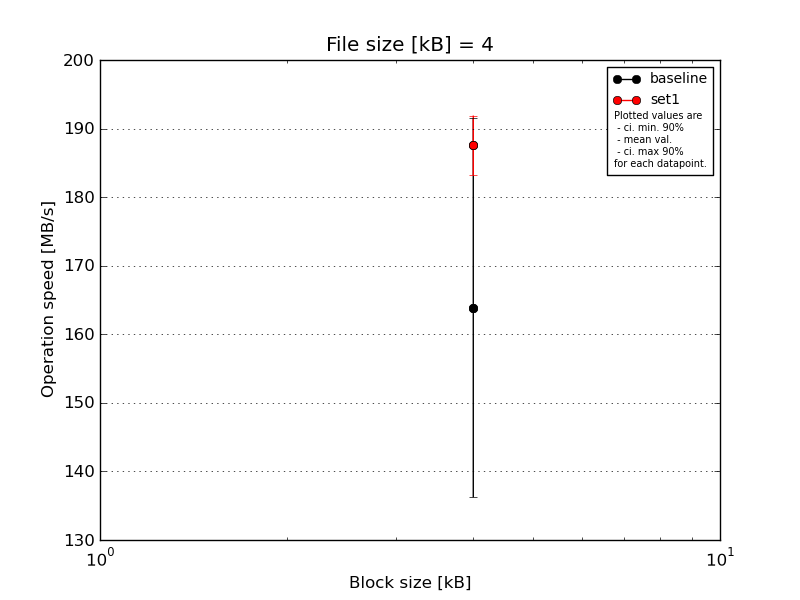
|
File size [kB] |
Block size [kB] |
| 4 |
| baseline | 4 | 195.5 |
| 4 | 139.08 |
| 4 | 145.24 |
| 4 | 143.96 |
| 4 | 195.5 |
| mean val. |
163.86 |
| standard dev. |
28.98 |
| ci. min. 90% |
136.23 |
| ci. max 90% |
191.48 |
| geom. mean |
161.87 |
| median |
145.24 |
| first quartile |
143.96 |
| third quartile |
195.5 |
| minimum |
139.08 |
| maximum |
195.5 |
| set1 | 4 | 184.49 |
| 4 | 184.49 |
| 4 | 195.5 |
| 4 | 186.59 |
| 4 | 186.59 |
| mean val. |
187.53 |
| standard dev. |
4.57 |
| ci. min. 90% |
183.17 |
| ci. max 90% |
191.9 |
| geom. mean |
187.49 |
| median |
186.59 |
| first quartile |
184.49 |
| third quartile |
186.59 |
| minimum |
184.49 |
| maximum |
195.5 |
| baseline set1 difference |
14.45 % |
| ttest p-value |
0.1088 |
| ttest equality |
SAME |
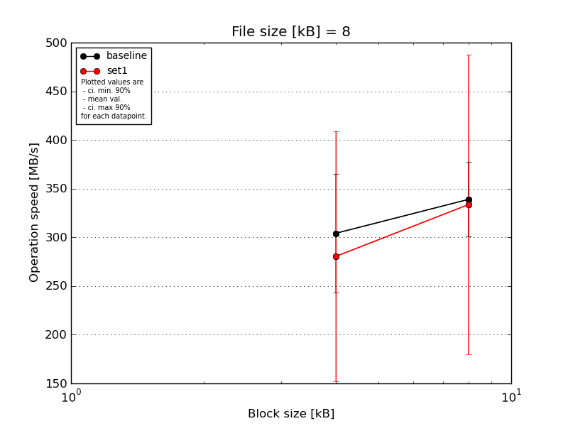
|
File size [kB] |
Block size [kB] |
| 4 |
8 |
| baseline | 8 | 338.49 | 373.19 |
| 8 | 325.06 | 301.16 |
| 8 | 328.32 | 356.93 |
| 8 | 190.73 | 290.48 |
| 8 | 338.49 | 373.19 |
| mean val. |
304.22 |
338.99 |
| standard dev. |
63.73 |
40.14 |
| ci. min. 90% |
243.46 |
300.72 |
| ci. max 90% |
364.98 |
377.26 |
| geom. mean |
297.55 |
337.03 |
| median |
328.32 |
356.93 |
| first quartile |
325.06 |
301.16 |
| third quartile |
338.49 |
373.19 |
| minimum |
190.73 |
290.48 |
| maximum |
338.49 |
373.19 |
| set1 | 8 | 353.08 | 462.79 |
| 8 | 50.43 | 410.6 |
| 8 | 373.19 | 373.19 |
| 8 | 356.93 | 368.98 |
| 8 | 269.02 | 52.78 |
| mean val. |
280.53 |
333.67 |
| standard dev. |
134.88 |
161.47 |
| ci. min. 90% |
151.94 |
179.72 |
| ci. max 90% |
409.12 |
487.62 |
| geom. mean |
229.6 |
267.94 |
| median |
353.08 |
373.19 |
| first quartile |
269.02 |
368.98 |
| third quartile |
356.93 |
410.6 |
| minimum |
50.43 |
52.78 |
| maximum |
373.19 |
462.79 |
| baseline set1 difference |
-7.79 % |
-1.57 % |
| ttest p-value |
0.7317 |
0.9447 |
| ttest equality |
SAME |
SAME |
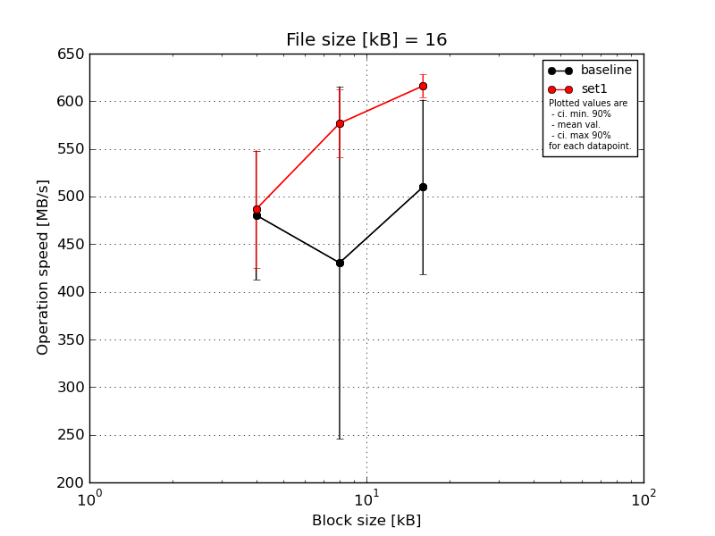
|
File size [kB] |
Block size [kB] |
| 4 |
8 |
16 |
| baseline | 16 | 501.02 | 556.31 | 596.84 |
| 16 | 520.93 | 538.04 | 556.31 |
| 16 | 504.88 | 538.04 | 580.96 |
| 16 | 354.62 | 96.55 | 381.45 |
| 16 | 520.93 | 423.34 | 434.57 |
| mean val. |
480.48 |
430.45 |
510.03 |
| standard dev. |
70.94 |
193.99 |
96.09 |
| ci. min. 90% |
412.84 |
245.5 |
418.41 |
| ci. max 90% |
548.11 |
615.4 |
601.64 |
| geom. mean |
475.63 |
366.16 |
502.3 |
| median |
504.88 |
538.04 |
556.31 |
| first quartile |
501.02 |
423.34 |
434.57 |
| third quartile |
520.93 |
538.04 |
580.96 |
| minimum |
354.62 |
96.55 |
381.45 |
| maximum |
520.93 |
556.31 |
596.84 |
| set1 | 16 | 556.31 | 602.32 | 625.31 |
| 16 | 486.15 | 602.32 | 602.32 |
| 16 | 381.45 | 556.31 | 625.31 |
| 16 | 504.88 | 602.32 | 625.31 |
| 16 | 504.88 | 520.93 | 602.32 |
| mean val. |
486.73 |
576.84 |
616.11 |
| standard dev. |
64.39 |
37.07 |
12.59 |
| ci. min. 90% |
425.35 |
541.5 |
604.11 |
| ci. max 90% |
548.12 |
612.18 |
628.12 |
| geom. mean |
483.04 |
575.86 |
616.01 |
| median |
504.88 |
602.32 |
625.31 |
| first quartile |
486.15 |
556.31 |
602.32 |
| third quartile |
504.88 |
602.32 |
625.31 |
| minimum |
381.45 |
520.93 |
602.32 |
| maximum |
556.31 |
602.32 |
625.31 |
| baseline set1 difference |
1.3 % |
34.01 % |
20.8 % |
| ttest p-value |
0.8875 |
0.136 |
0.0401 |
| ttest equality |
SAME |
SAME |
DIFF |
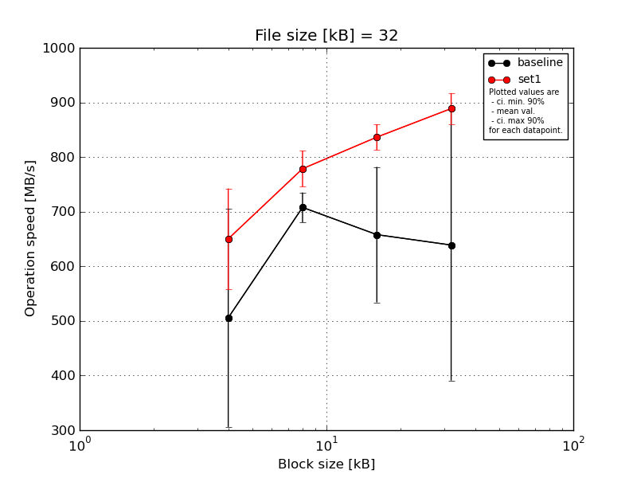
|
File size [kB] |
Block size [kB] |
| 4 |
8 |
16 |
32 |
| baseline | 32 | 649.5 | 741.33 | 781.09 | 180.59 |
| 32 | 440.13 | 666.0 | 489.43 | 694.22 |
| 32 | 624.73 | 724.93 | 745.55 | 758.49 |
| 32 | 165.33 | 709.24 | 724.93 | 741.33 |
| 32 | 649.5 | 697.91 | 548.86 | 820.2 |
| mean val. |
505.83 |
707.88 |
657.97 |
638.97 |
| standard dev. |
209.57 |
28.57 |
130.02 |
260.18 |
| ci. min. 90% |
306.03 |
680.64 |
534.01 |
390.91 |
| ci. max 90% |
705.64 |
735.12 |
781.94 |
887.02 |
| geom. mean |
453.47 |
707.42 |
647.03 |
565.47 |
| median |
624.73 |
709.24 |
724.93 |
741.33 |
| first quartile |
440.13 |
697.91 |
548.86 |
694.22 |
| third quartile |
649.5 |
724.93 |
745.55 |
758.49 |
| minimum |
165.33 |
666.0 |
489.43 |
180.59 |
| maximum |
649.5 |
741.33 |
781.09 |
820.2 |
| set1 | 32 | 728.96 | 800.17 | 869.14 | 917.83 |
| 32 | 666.0 | 724.93 | 805.08 | 924.31 |
| 32 | 482.23 | 800.17 | 820.2 | 869.14 |
| 32 | 694.22 | 805.08 | 841.25 | 863.42 |
| 32 | 679.81 | 762.91 | 846.69 | 869.14 |
| mean val. |
650.24 |
778.65 |
836.47 |
888.77 |
| standard dev. |
96.8 |
34.49 |
24.72 |
29.67 |
| ci. min. 90% |
557.95 |
745.77 |
812.9 |
860.49 |
| ci. max 90% |
742.53 |
811.53 |
860.04 |
917.05 |
| geom. mean |
643.67 |
778.03 |
836.18 |
888.38 |
| median |
679.81 |
800.17 |
841.25 |
869.14 |
| first quartile |
666.0 |
762.91 |
820.2 |
869.14 |
| third quartile |
694.22 |
800.17 |
846.69 |
917.83 |
| minimum |
482.23 |
724.93 |
805.08 |
863.42 |
| maximum |
728.96 |
805.08 |
869.14 |
924.31 |
| baseline set1 difference |
28.55 % |
10.0 % |
27.13 % |
39.1 % |
| ttest p-value |
0.1994 |
0.0077 |
0.0167 |
0.0655 |
| ttest equality |
SAME |
DIFF |
DIFF |
DIFF |
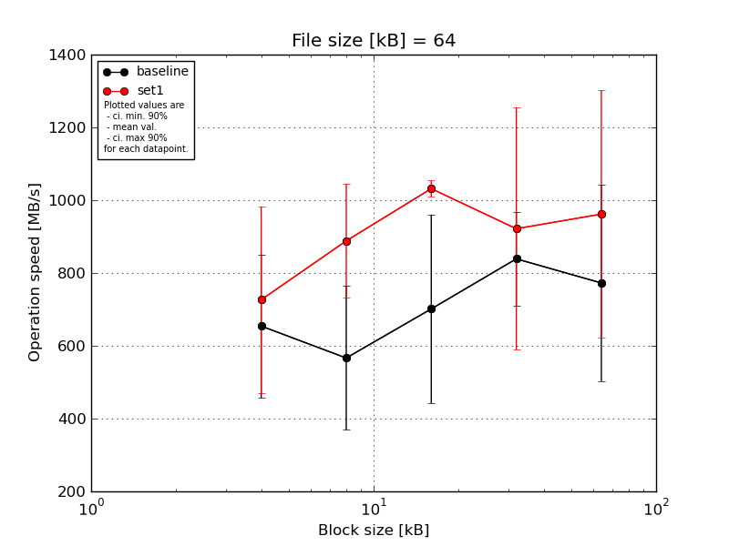
|
File size [kB] |
Block size [kB] |
| 4 |
8 |
16 |
32 |
64 |
| baseline | 64 | 743.03 | 880.25 | 933.54 | 960.92 | 975.22 |
| 64 | 762.48 | 557.98 | 762.48 | 892.24 | 960.92 |
| 64 | 726.55 | 297.62 | 907.68 | 947.03 | 315.53 |
| 64 | 285.31 | 557.98 | 264.84 | 736.76 | 933.54 |
| 64 | 753.71 | 538.5 | 638.12 | 657.32 | 677.71 |
| mean val. |
654.21 |
566.47 |
701.33 |
838.85 |
772.58 |
| standard dev. |
206.66 |
207.16 |
271.46 |
134.93 |
282.99 |
| ci. min. 90% |
457.19 |
368.96 |
442.53 |
710.21 |
502.78 |
| ci. max 90% |
851.24 |
763.97 |
960.14 |
967.5 |
1042.39 |
| geom. mean |
615.75 |
535.23 |
642.15 |
829.71 |
715.16 |
| median |
743.03 |
557.98 |
762.48 |
892.24 |
933.54 |
| first quartile |
726.55 |
538.5 |
638.12 |
736.76 |
677.71 |
| third quartile |
753.71 |
557.98 |
907.68 |
947.03 |
960.92 |
| minimum |
285.31 |
297.62 |
264.84 |
657.32 |
315.53 |
| maximum |
762.48 |
880.25 |
933.54 |
960.92 |
975.22 |
| set1 | 64 | 868.58 | 975.22 | 1041.06 | 1097.73 | 1097.73 |
| 64 | 846.16 | 978.86 | 1045.21 | 1057.86 | 1116.43 |
| 64 | 248.05 | 930.23 | 989.95 | 1075.22 | 323.71 |
| 64 | 812.08 | 960.92 | 1041.06 | 297.62 | 1135.78 |
| 64 | 857.22 | 596.04 | 1041.06 | 1079.64 | 1135.78 |
| mean val. |
726.42 |
888.25 |
1031.67 |
921.61 |
961.88 |
| standard dev. |
268.25 |
164.47 |
23.39 |
349.11 |
357.1 |
| ci. min. 90% |
470.67 |
731.45 |
1009.37 |
588.77 |
621.43 |
| ci. max 90% |
982.17 |
1045.06 |
1053.96 |
1254.45 |
1302.34 |
| geom. mean |
661.76 |
873.52 |
1031.45 |
833.05 |
874.61 |
| median |
846.16 |
960.92 |
1041.06 |
1075.22 |
1116.43 |
| first quartile |
812.08 |
930.23 |
1041.06 |
1057.86 |
1097.73 |
| third quartile |
857.22 |
975.22 |
1041.06 |
1079.64 |
1135.78 |
| minimum |
248.05 |
596.04 |
989.95 |
297.62 |
323.71 |
| maximum |
868.58 |
978.86 |
1045.21 |
1097.73 |
1135.78 |
| baseline set1 difference |
11.04 % |
56.81 % |
47.1 % |
9.87 % |
24.5 % |
| ttest p-value |
0.6463 |
0.0262 |
0.0266 |
0.6343 |
0.3801 |
| ttest equality |
SAME |
DIFF |
DIFF |
SAME |
SAME |
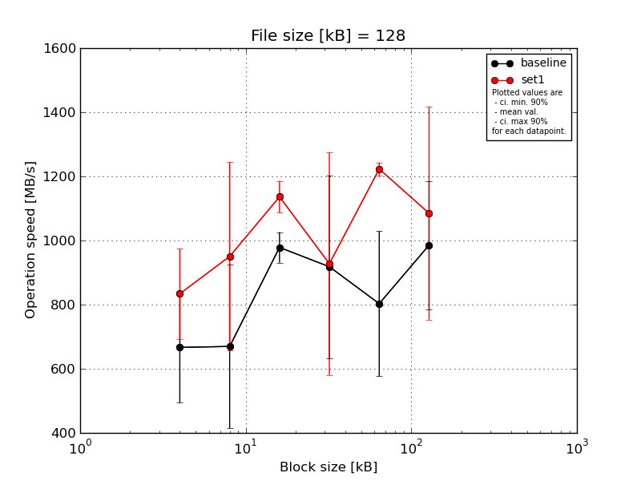
|
File size [kB] |
Block size [kB] |
| 4 |
8 |
16 |
32 |
64 |
128 |
| baseline | 128 | 448.18 | 967.67 | 1024.39 | 1088.17 | 1057.45 | 1106.55 |
| 128 | 516.64 | 595.24 | 999.01 | 1032.46 | 690.03 | 612.63 |
| 128 | 855.55 | 482.41 | 984.01 | 1068.22 | 1040.65 | 1106.55 |
| 128 | 690.94 | 931.56 | 893.46 | 385.56 | 714.48 | 1051.09 |
| 128 | 822.02 | 371.1 | 991.46 | 1016.44 | 512.6 | 1051.09 |
| mean val. |
666.67 |
669.59 |
978.47 |
918.17 |
803.04 |
985.58 |
| standard dev. |
180.72 |
267.93 |
49.89 |
299.09 |
237.78 |
210.32 |
| ci. min. 90% |
494.37 |
414.15 |
930.9 |
633.03 |
576.34 |
785.06 |
| ci. max 90% |
838.97 |
925.03 |
1026.03 |
1203.32 |
1029.74 |
1186.1 |
| geom. mean |
646.01 |
625.9 |
977.41 |
859.97 |
774.18 |
963.12 |
| median |
690.94 |
595.24 |
991.46 |
1032.46 |
714.48 |
1051.09 |
| first quartile |
516.64 |
482.41 |
984.01 |
1016.44 |
690.03 |
1051.09 |
| third quartile |
822.02 |
931.56 |
999.01 |
1068.22 |
1040.65 |
1106.55 |
| minimum |
448.18 |
371.1 |
893.46 |
385.56 |
512.6 |
612.63 |
| maximum |
855.55 |
967.67 |
1024.39 |
1088.17 |
1057.45 |
1106.55 |
| set1 | 128 | 926.62 | 1097.28 | 1178.69 | 1200.28 | 1251.86 | 1248.88 |
| 128 | 578.17 | 1088.17 | 1168.18 | 1189.38 | 1211.37 | 1225.53 |
| 128 | 920.12 | 1079.21 | 1125.55 | 1189.38 | 1214.17 | 1260.9 |
| 128 | 839.12 | 399.36 | 1051.09 | 512.1 | 1200.28 | 1225.53 |
| 128 | 905.81 | 1088.17 | 1157.87 | 546.24 | 1237.09 | 463.23 |
| mean val. |
833.97 |
950.44 |
1136.28 |
927.48 |
1222.96 |
1084.81 |
| standard dev. |
147.16 |
308.13 |
51.61 |
363.83 |
20.98 |
347.81 |
| ci. min. 90% |
693.66 |
656.68 |
1087.07 |
580.6 |
1202.95 |
753.21 |
| ci. max 90% |
974.27 |
1244.21 |
1185.48 |
1274.35 |
1242.96 |
1416.41 |
| geom. mean |
821.74 |
890.51 |
1135.31 |
861.65 |
1222.81 |
1018.43 |
| median |
905.81 |
1088.17 |
1157.87 |
1189.38 |
1214.17 |
1225.53 |
| first quartile |
839.12 |
1079.21 |
1125.55 |
546.24 |
1211.37 |
1225.53 |
| third quartile |
920.12 |
1088.17 |
1168.18 |
1189.38 |
1237.09 |
1248.88 |
| minimum |
578.17 |
399.36 |
1051.09 |
512.1 |
1200.28 |
463.23 |
| maximum |
926.62 |
1097.28 |
1178.69 |
1200.28 |
1251.86 |
1260.9 |
| baseline set1 difference |
25.1 % |
41.94 % |
16.13 % |
1.01 % |
52.29 % |
10.07 % |
| ttest p-value |
0.1471 |
0.1626 |
0.0012 |
0.9658 |
0.0043 |
0.6 |
| ttest equality |
SAME |
SAME |
DIFF |
SAME |
DIFF |
SAME |
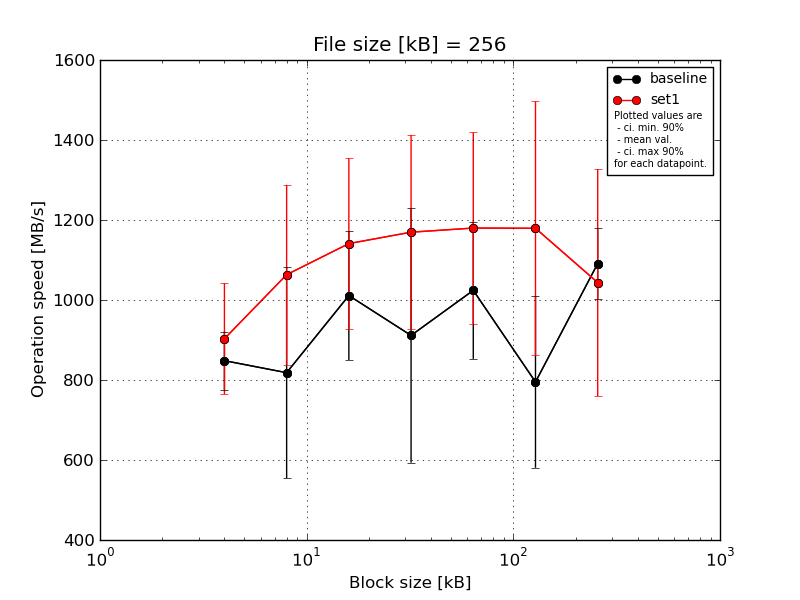
|
File size [kB] |
Block size [kB] |
| 4 |
8 |
16 |
32 |
64 |
128 |
256 |
| baseline | 256 | 912.75 | 1028.21 | 1101.67 | 1174.47 | 718.3 | 1195.9 | 1190.47 |
| 256 | 883.53 | 600.97 | 1101.67 | 1131.39 | 1007.46 | 713.9 | 1156.34 |
| 256 | 889.52 | 1016.25 | 1082.34 | 1141.24 | 1111.01 | 708.11 | 1120.51 |
| 256 | 722.26 | 442.47 | 710.51 | 656.26 | 1147.48 | 696.35 | 992.21 |
| 256 | 833.65 | 1003.61 | 1059.38 | 453.77 | 1136.29 | 661.23 | 995.98 |
| mean val. |
848.34 |
818.3 |
1011.11 |
911.43 |
1024.11 |
795.1 |
1091.1 |
| standard dev. |
76.15 |
276.62 |
168.94 |
333.52 |
179.69 |
224.99 |
91.95 |
| ci. min. 90% |
775.74 |
554.58 |
850.05 |
593.45 |
852.79 |
580.6 |
1003.43 |
| ci. max 90% |
920.94 |
1082.03 |
1172.18 |
1229.4 |
1195.42 |
1009.6 |
1178.77 |
| geom. mean |
845.44 |
774.6 |
997.74 |
853.0 |
1009.48 |
774.32 |
1087.97 |
| median |
883.53 |
1003.61 |
1082.34 |
1131.39 |
1111.01 |
708.11 |
1120.51 |
| first quartile |
833.65 |
600.97 |
1059.38 |
656.26 |
1007.46 |
696.35 |
995.98 |
| third quartile |
889.52 |
1016.25 |
1101.67 |
1141.24 |
1136.29 |
713.9 |
1156.34 |
| minimum |
722.26 |
442.47 |
710.51 |
453.77 |
718.3 |
661.23 |
992.21 |
| maximum |
912.75 |
1028.21 |
1101.67 |
1174.47 |
1147.48 |
1195.9 |
1190.47 |
| set1 | 256 | 972.88 | 1185.09 | 1268.22 | 1329.32 | 1162.75 | 1322.61 | 1336.1 |
| 256 | 954.29 | 642.59 | 1219.55 | 1250.08 | 1351.6 | 1336.1 | 743.77 |
| 256 | 969.28 | 1146.23 | 742.19 | 1269.76 | 1282.18 | 584.23 | 716.33 |
| 256 | 976.5 | 1162.75 | 1244.15 | 716.33 | 752.85 | 1331.01 | 1301.28 |
| 256 | 642.59 | 1179.76 | 1231.0 | 1282.18 | 1349.86 | 1322.61 | 1120.51 |
| mean val. |
903.11 |
1063.28 |
1141.02 |
1169.54 |
1179.85 |
1179.31 |
1043.6 |
| standard dev. |
145.88 |
235.67 |
223.69 |
255.02 |
250.74 |
332.71 |
297.85 |
| ci. min. 90% |
764.03 |
838.6 |
927.76 |
926.4 |
940.79 |
862.11 |
759.63 |
| ci. max 90% |
1042.19 |
1287.97 |
1354.28 |
1412.67 |
1418.9 |
1496.52 |
1327.57 |
| geom. mean |
891.99 |
1036.68 |
1119.46 |
1141.49 |
1154.13 |
1126.92 |
1007.48 |
| median |
969.28 |
1162.75 |
1231.0 |
1269.76 |
1282.18 |
1322.61 |
1120.51 |
| first quartile |
954.29 |
1146.23 |
1219.55 |
1250.08 |
1162.75 |
1322.61 |
743.77 |
| third quartile |
972.88 |
1179.76 |
1244.15 |
1282.18 |
1349.86 |
1331.01 |
1301.28 |
| minimum |
642.59 |
642.59 |
742.19 |
716.33 |
752.85 |
584.23 |
716.33 |
| maximum |
976.5 |
1185.09 |
1268.22 |
1329.32 |
1351.6 |
1336.1 |
1336.1 |
| baseline set1 difference |
6.46 % |
29.94 % |
12.85 % |
28.32 % |
15.21 % |
48.32 % |
-4.35 % |
| ttest p-value |
0.4781 |
0.1701 |
0.3304 |
0.2065 |
0.2917 |
0.0649 |
0.7421 |
| ttest equality |
SAME |
SAME |
SAME |
SAME |
SAME |
DIFF |
SAME |
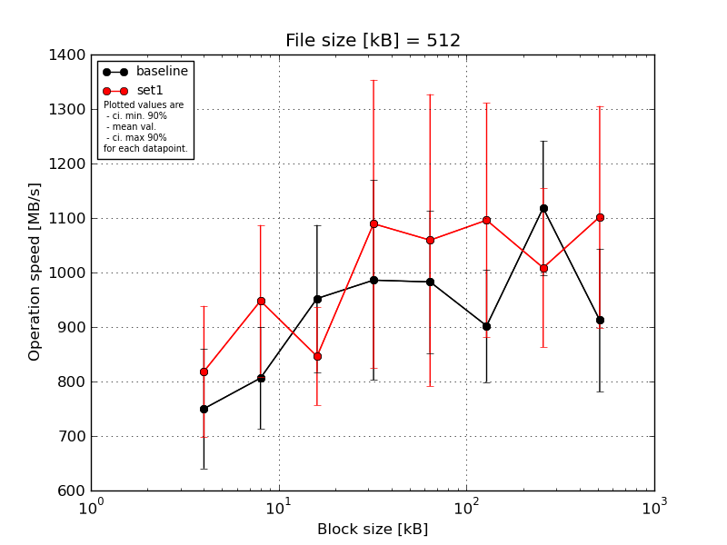
|
File size [kB] |
Block size [kB] |
| 4 |
8 |
16 |
32 |
64 |
128 |
256 |
512 |
| baseline | 512 | 755.24 | 841.62 | 837.58 | 1187.65 | 919.08 | 910.69 | 1210.96 | 910.69 |
| 512 | 595.98 | 952.47 | 788.76 | 995.89 | 1087.28 | 1055.01 | 1162.63 | 755.24 |
| 512 | 915.86 | 801.42 | 1075.02 | 877.17 | 1167.8 | 910.69 | 889.83 | 877.17 |
| 512 | 713.12 | 720.47 | 1110.89 | 722.46 | 865.23 | 750.91 | 1163.27 | 886.44 |
| 512 | 770.5 | 715.31 | 949.02 | 1146.73 | 874.25 | 883.46 | 1165.21 | 1133.71 |
| mean val. |
750.14 |
806.26 |
952.25 |
985.98 |
982.73 |
902.15 |
1118.38 |
912.65 |
| standard dev. |
115.15 |
97.83 |
141.53 |
192.28 |
136.76 |
108.09 |
129.4 |
137.47 |
| ci. min. 90% |
640.36 |
712.99 |
817.32 |
802.66 |
852.34 |
799.1 |
995.01 |
781.59 |
| ci. max 90% |
859.93 |
899.53 |
1087.19 |
1169.3 |
1113.11 |
1005.2 |
1241.74 |
1043.72 |
| geom. mean |
743.05 |
801.65 |
943.77 |
970.18 |
975.36 |
896.92 |
1111.71 |
904.77 |
| median |
755.24 |
801.42 |
949.02 |
995.89 |
919.08 |
910.69 |
1163.27 |
886.44 |
| first quartile |
713.12 |
720.47 |
837.58 |
877.17 |
874.25 |
883.46 |
1162.63 |
877.17 |
| third quartile |
770.5 |
841.62 |
1075.02 |
1146.73 |
1087.28 |
910.69 |
1165.21 |
910.69 |
| minimum |
595.98 |
715.31 |
788.76 |
722.46 |
865.23 |
750.91 |
889.83 |
755.24 |
| maximum |
915.86 |
952.47 |
1110.89 |
1187.65 |
1167.8 |
1055.01 |
1210.96 |
1133.71 |
| set1 | 512 | 992.12 | 811.65 | 897.44 | 938.4 | 1366.4 | 1354.92 | 1282.03 | 1340.2 |
| 512 | 725.71 | 826.36 | 891.34 | 1322.45 | 932.98 | 922.71 | 931.32 | 927.61 |
| 512 | 741.88 | 1118.6 | 872.43 | 1301.93 | 715.31 | 1330.0 | 930.91 | 974.6 |
| 512 | 913.87 | 894.38 | 891.34 | 676.54 | 1333.38 | 948.59 | 945.17 | 937.98 |
| 512 | 719.24 | 1088.97 | 678.51 | 1208.17 | 948.59 | 923.93 | 954.2 | 1330.0 |
| mean val. |
818.56 |
947.99 |
846.21 |
1089.5 |
1059.33 |
1096.03 |
1008.73 |
1102.08 |
| standard dev. |
126.07 |
145.98 |
94.22 |
276.96 |
281.06 |
225.37 |
153.1 |
213.46 |
| ci. min. 90% |
698.37 |
808.82 |
756.39 |
825.44 |
791.37 |
881.17 |
862.76 |
898.57 |
| ci. max 90% |
938.76 |
1087.17 |
936.04 |
1353.56 |
1327.29 |
1310.89 |
1154.69 |
1305.59 |
| geom. mean |
811.12 |
939.18 |
841.54 |
1057.2 |
1028.95 |
1078.23 |
1000.49 |
1086.13 |
| median |
741.88 |
894.38 |
891.34 |
1208.17 |
948.59 |
948.59 |
945.17 |
974.6 |
| first quartile |
725.71 |
826.36 |
872.43 |
938.4 |
932.98 |
923.93 |
931.32 |
937.98 |
| third quartile |
913.87 |
1088.97 |
891.34 |
1301.93 |
1333.38 |
1330.0 |
954.2 |
1330.0 |
| minimum |
719.24 |
811.65 |
678.51 |
676.54 |
715.31 |
922.71 |
930.91 |
927.61 |
| maximum |
992.12 |
1118.6 |
897.44 |
1322.45 |
1366.4 |
1354.92 |
1282.03 |
1340.2 |
| baseline set1 difference |
9.12 % |
17.58 % |
-11.14 % |
10.5 % |
7.79 % |
21.49 % |
-9.8 % |
20.76 % |
| ttest p-value |
0.3964 |
0.109 |
0.2006 |
0.5118 |
0.5986 |
0.1211 |
0.2561 |
0.1338 |
| ttest equality |
SAME |
SAME |
SAME |
SAME |
SAME |
SAME |
SAME |
SAME |
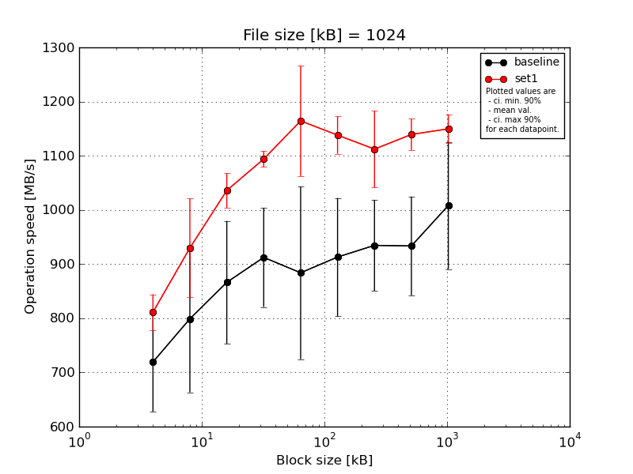
|
File size [kB] |
Block size [kB] |
| 4 |
8 |
16 |
32 |
64 |
128 |
256 |
512 |
1024 |
| baseline | 1024 | 834.06 | 953.29 | 1007.08 | 1041.6 | 1064.06 | 1043.67 | 1054.96 | 1053.9 | 1219.7 |
| 1024 | 588.61 | 673.37 | 695.48 | 853.92 | 708.76 | 882.68 | 905.74 | 896.83 | 945.34 |
| 1024 | 787.99 | 892.82 | 943.43 | 984.16 | 1017.09 | 1012.19 | 997.03 | 1010.24 | 1001.07 |
| 1024 | 678.93 | 625.75 | 826.5 | 814.3 | 711.28 | 765.13 | 856.89 | 822.44 | 967.14 |
| 1024 | 706.73 | 849.6 | 859.17 | 868.06 | 918.43 | 861.29 | 858.29 | 884.16 | 907.5 |
| mean val. |
719.26 |
798.97 |
866.33 |
912.41 |
883.93 |
912.99 |
934.58 |
933.51 |
1008.15 |
| standard dev. |
95.86 |
142.27 |
118.94 |
95.98 |
167.23 |
114.42 |
88.14 |
95.52 |
123.04 |
| ci. min. 90% |
627.87 |
663.33 |
752.94 |
820.9 |
724.49 |
803.9 |
850.54 |
842.45 |
890.84 |
| ci. max 90% |
810.65 |
934.61 |
979.72 |
1003.92 |
1043.36 |
1022.08 |
1018.62 |
1024.58 |
1125.46 |
| geom. mean |
714.04 |
788.45 |
859.56 |
908.46 |
870.93 |
907.2 |
931.32 |
929.64 |
1002.6 |
| median |
706.73 |
849.6 |
859.17 |
868.06 |
918.43 |
882.68 |
905.74 |
896.83 |
967.14 |
| first quartile |
678.93 |
673.37 |
826.5 |
853.92 |
711.28 |
861.29 |
858.29 |
884.16 |
945.34 |
| third quartile |
787.99 |
892.82 |
943.43 |
984.16 |
1017.09 |
1012.19 |
997.03 |
1010.24 |
1001.07 |
| minimum |
588.61 |
625.75 |
695.48 |
814.3 |
708.76 |
765.13 |
856.89 |
822.44 |
907.5 |
| maximum |
834.06 |
953.29 |
1007.08 |
1041.6 |
1064.06 |
1043.67 |
1054.96 |
1053.9 |
1219.7 |
| set1 | 1024 | 807.09 | 966.25 | 1067.03 | 1108.49 | 1154.56 | 1168.39 | 1189.26 | 1162.89 | 1183.56 |
| 1024 | 843.79 | 977.51 | 980.25 | 1111.13 | 1108.49 | 1144.17 | 1138.89 | 1146.99 | 1106.15 |
| 1024 | 817.0 | 759.31 | 1054.69 | 1079.95 | 1351.34 | 1088.07 | 1122.43 | 1114.97 | 1153.29 |
| 1024 | 755.21 | 972.75 | 1037.22 | 1077.73 | 1104.98 | 1116.16 | 1121.23 | 1170.68 | 1149.19 |
| 1024 | 833.23 | 973.65 | 1040.56 | 1092.89 | 1102.37 | 1173.62 | 989.27 | 1101.21 | 1156.15 |
| mean val. |
811.26 |
929.89 |
1035.95 |
1094.04 |
1164.35 |
1138.08 |
1112.22 |
1139.35 |
1149.67 |
| standard dev. |
34.4 |
95.44 |
33.33 |
15.55 |
106.71 |
36.06 |
74.08 |
30.18 |
27.83 |
| ci. min. 90% |
778.47 |
838.9 |
1004.18 |
1079.21 |
1062.61 |
1103.71 |
1041.59 |
1110.58 |
1123.14 |
| ci. max 90% |
844.06 |
1020.89 |
1067.72 |
1108.86 |
1266.09 |
1172.46 |
1182.84 |
1168.12 |
1176.2 |
| geom. mean |
810.67 |
925.57 |
1035.51 |
1093.95 |
1160.7 |
1137.62 |
1110.16 |
1139.02 |
1149.4 |
| median |
817.0 |
972.75 |
1040.56 |
1092.89 |
1108.49 |
1144.17 |
1122.43 |
1146.99 |
1153.29 |
| first quartile |
807.09 |
966.25 |
1037.22 |
1079.95 |
1104.98 |
1116.16 |
1121.23 |
1114.97 |
1149.19 |
| third quartile |
833.23 |
973.65 |
1054.69 |
1108.49 |
1154.56 |
1168.39 |
1138.89 |
1162.89 |
1156.15 |
| minimum |
755.21 |
759.31 |
980.25 |
1077.73 |
1102.37 |
1088.07 |
989.27 |
1101.21 |
1106.15 |
| maximum |
843.79 |
977.51 |
1067.03 |
1111.13 |
1351.34 |
1173.62 |
1189.26 |
1170.68 |
1183.56 |
| baseline set1 difference |
12.79 % |
16.39 % |
19.58 % |
19.91 % |
31.72 % |
24.65 % |
19.01 % |
22.05 % |
14.04 % |
| ttest p-value |
0.0781 |
0.1259 |
0.0153 |
0.0031 |
0.0134 |
0.003 |
0.0087 |
0.0018 |
0.0365 |
| ttest equality |
DIFF |
SAME |
DIFF |
DIFF |
DIFF |
DIFF |
DIFF |
DIFF |
DIFF |
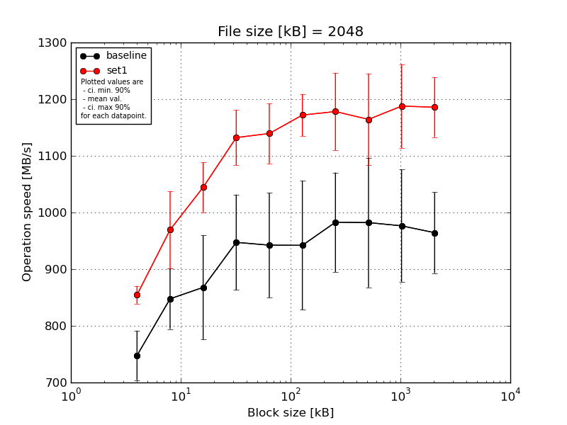
|
File size [kB] |
Block size [kB] |
| 4 |
8 |
16 |
32 |
64 |
128 |
256 |
512 |
1024 |
2048 |
| baseline | 2048 | 794.62 | 946.92 | 1001.05 | 1041.57 | 1033.61 | 1119.11 | 1135.16 | 1140.25 | 1133.78 | 1037.32 |
| 2048 | 693.74 | 819.05 | 787.08 | 810.04 | 831.23 | 831.97 | 931.16 | 856.52 | 912.42 | 984.72 |
| 2048 | 791.77 | 833.38 | 938.97 | 984.72 | 1002.49 | 1009.0 | 1002.01 | 1017.81 | 1009.6 | 973.74 |
| 2048 | 747.39 | 824.37 | 821.7 | 982.29 | 843.52 | 877.58 | 937.61 | 866.97 | 965.34 | 837.87 |
| 2048 | 711.21 | 814.68 | 790.5 | 918.21 | 1000.93 | 872.56 | 908.27 | 1029.43 | 861.27 | 988.2 |
| mean val. |
747.75 |
847.68 |
867.86 |
947.37 |
942.35 |
942.04 |
982.84 |
982.2 |
976.48 |
964.37 |
| standard dev. |
45.79 |
55.91 |
96.74 |
88.31 |
96.82 |
119.3 |
91.99 |
119.95 |
104.09 |
74.82 |
| ci. min. 90% |
704.09 |
794.37 |
775.63 |
863.17 |
850.05 |
828.3 |
895.14 |
867.84 |
877.24 |
893.03 |
| ci. max 90% |
791.4 |
900.99 |
960.1 |
1031.57 |
1034.66 |
1055.79 |
1070.54 |
1096.56 |
1075.72 |
1035.7 |
| geom. mean |
746.62 |
846.28 |
863.67 |
943.93 |
938.28 |
936.25 |
979.57 |
976.34 |
972.16 |
961.92 |
| median |
747.39 |
824.37 |
821.7 |
982.29 |
1000.93 |
877.58 |
937.61 |
1017.81 |
965.34 |
984.72 |
| first quartile |
711.21 |
819.05 |
790.5 |
918.21 |
843.52 |
872.56 |
931.16 |
866.97 |
912.42 |
973.74 |
| third quartile |
791.77 |
833.38 |
938.97 |
984.72 |
1002.49 |
1009.0 |
1002.01 |
1029.43 |
1009.6 |
988.2 |
| minimum |
693.74 |
814.68 |
787.08 |
810.04 |
831.23 |
831.97 |
908.27 |
856.52 |
861.27 |
837.87 |
| maximum |
794.62 |
946.92 |
1001.05 |
1041.57 |
1033.61 |
1119.11 |
1135.16 |
1140.25 |
1133.78 |
1037.32 |
| set1 | 2048 | 875.2 | 1018.92 | 1084.67 | 1148.21 | 1072.33 | 1182.03 | 1306.27 | 1216.48 | 1207.72 | 1284.47 |
| 2048 | 853.21 | 1002.96 | 964.78 | 1087.48 | 1137.0 | 1150.73 | 1147.43 | 1257.89 | 1289.6 | 1161.41 |
| 2048 | 831.23 | 995.94 | 1057.06 | 1115.39 | 1116.13 | 1154.06 | 1140.25 | 1168.2 | 1073.56 | 1153.42 |
| 2048 | 863.58 | 842.84 | 1062.68 | 1213.66 | 1224.83 | 1235.29 | 1150.1 | 1034.12 | 1171.63 | 1160.12 |
| 2048 | 850.27 | 986.68 | 1053.74 | 1096.43 | 1146.8 | 1137.62 | 1146.8 | 1144.92 | 1196.18 | 1169.66 |
| mean val. |
854.7 |
969.47 |
1044.59 |
1132.23 |
1139.42 |
1171.94 |
1178.17 |
1164.32 |
1187.74 |
1185.82 |
| standard dev. |
16.37 |
71.76 |
46.21 |
51.12 |
55.67 |
38.93 |
71.7 |
84.88 |
77.69 |
55.45 |
| ci. min. 90% |
839.09 |
901.05 |
1000.53 |
1083.49 |
1086.34 |
1134.83 |
1109.81 |
1083.4 |
1113.67 |
1132.95 |
| ci. max 90% |
870.3 |
1037.89 |
1088.64 |
1180.98 |
1192.5 |
1209.06 |
1246.53 |
1245.24 |
1261.81 |
1238.68 |
| geom. mean |
854.57 |
967.2 |
1043.74 |
1131.33 |
1138.34 |
1171.44 |
1176.51 |
1161.78 |
1185.68 |
1184.82 |
| median |
853.21 |
995.94 |
1057.06 |
1115.39 |
1137.0 |
1154.06 |
1147.43 |
1168.2 |
1196.18 |
1161.41 |
| first quartile |
850.27 |
986.68 |
1053.74 |
1096.43 |
1116.13 |
1150.73 |
1146.8 |
1144.92 |
1171.63 |
1160.12 |
| third quartile |
863.58 |
1002.96 |
1062.68 |
1148.21 |
1146.8 |
1182.03 |
1150.1 |
1216.48 |
1207.72 |
1169.66 |
| minimum |
831.23 |
842.84 |
964.78 |
1087.48 |
1072.33 |
1137.62 |
1140.25 |
1034.12 |
1073.56 |
1153.42 |
| maximum |
875.2 |
1018.92 |
1084.67 |
1213.66 |
1224.83 |
1235.29 |
1306.27 |
1257.89 |
1289.6 |
1284.47 |
| baseline set1 difference |
14.3 % |
14.37 % |
20.36 % |
19.51 % |
20.91 % |
24.4 % |
19.87 % |
18.54 % |
21.63 % |
22.96 % |
| ttest p-value |
0.0012 |
0.0172 |
0.0062 |
0.0037 |
0.0043 |
0.0035 |
0.0057 |
0.0242 |
0.0066 |
0.0007 |
| ttest equality |
DIFF |
DIFF |
DIFF |
DIFF |
DIFF |
DIFF |
DIFF |
DIFF |
DIFF |
DIFF |
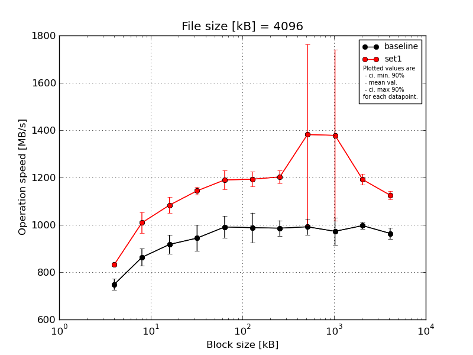
|
File size [kB] |
Block size [kB] |
| 4 |
8 |
16 |
32 |
64 |
128 |
256 |
512 |
1024 |
2048 |
4096 |
| baseline | 4096 | 773.54 | 895.27 | 970.69 | 1027.96 | 1068.97 | 1076.44 | 1031.19 | 1030.93 | 1042.53 | 1018.05 | 992.8 |
| 4096 | 726.48 | 816.85 | 900.9 | 884.93 | 941.86 | 958.33 | 980.62 | 1008.56 | 975.37 | 995.51 | 964.33 |
| 4096 | 773.08 | 907.67 | 947.82 | 974.92 | 981.08 | 1008.56 | 1006.81 | 1005.54 | 992.57 | 977.99 | 970.41 |
| 4096 | 744.34 | 854.9 | 868.44 | 927.18 | 995.75 | 897.86 | 969.01 | 973.9 | 875.1 | 988.88 | 965.22 |
| 4096 | 724.88 | 838.58 | 898.05 | 905.17 | 967.39 | 999.01 | 941.65 | 939.86 | 977.48 | 1003.01 | 925.9 |
| mean val. |
748.46 |
862.65 |
917.18 |
944.03 |
991.01 |
988.04 |
985.85 |
991.76 |
972.61 |
996.69 |
963.73 |
| standard dev. |
23.93 |
38.17 |
41.26 |
57.63 |
47.88 |
65.9 |
34.49 |
35.42 |
60.88 |
15.07 |
24.1 |
| ci. min. 90% |
725.65 |
826.26 |
877.84 |
889.09 |
945.36 |
925.21 |
952.97 |
957.99 |
914.56 |
982.32 |
940.76 |
| ci. max 90% |
771.28 |
899.05 |
956.51 |
998.98 |
1036.66 |
1050.87 |
1018.74 |
1025.53 |
1030.65 |
1011.06 |
986.71 |
| geom. mean |
748.16 |
861.98 |
916.44 |
942.65 |
990.1 |
986.27 |
985.37 |
991.25 |
971.04 |
996.6 |
963.49 |
| median |
744.34 |
854.9 |
900.9 |
927.18 |
981.08 |
999.01 |
980.62 |
1005.54 |
977.48 |
995.51 |
965.22 |
| first quartile |
726.48 |
838.58 |
898.05 |
905.17 |
967.39 |
958.33 |
969.01 |
973.9 |
975.37 |
988.88 |
964.33 |
| third quartile |
773.08 |
895.27 |
947.82 |
974.92 |
995.75 |
1008.56 |
1006.81 |
1008.56 |
992.57 |
1003.01 |
970.41 |
| minimum |
724.88 |
816.85 |
868.44 |
884.93 |
941.86 |
897.86 |
941.65 |
939.86 |
875.1 |
977.99 |
925.9 |
| maximum |
773.54 |
907.67 |
970.69 |
1027.96 |
1068.97 |
1076.44 |
1031.19 |
1030.93 |
1042.53 |
1018.05 |
992.8 |
| set1 | 4096 | 827.98 | 1036.86 | 1100.09 | 1158.42 | 1242.59 | 1231.55 | 1229.66 | 1266.99 | 1196.59 | 1207.71 | 1122.99 |
| 4096 | 846.74 | 1050.43 | 1030.93 | 1141.55 | 1164.78 | 1204.07 | 1167.53 | 1206.23 | 1243.42 | 1180.01 | 1128.05 |
| 4096 | 830.89 | 1017.31 | 1127.74 | 1162.76 | 1133.46 | 1170.63 | 1218.41 | 2093.28 | 2052.31 | 1196.17 | 1106.18 |
| 4096 | 822.54 | 930.47 | 1073.55 | 1136.37 | 1205.54 | 1148.75 | 1178.27 | 1167.86 | 1237.28 | 1156.75 | 1154.44 |
| 4096 | 834.57 | 1008.8 | 1083.74 | 1119.84 | 1201.91 | 1208.49 | 1218.76 | 1172.35 | 1161.07 | 1216.9 | 1114.78 |
| mean val. |
832.55 |
1008.77 |
1083.21 |
1143.79 |
1189.65 |
1192.7 |
1202.53 |
1381.34 |
1378.13 |
1191.51 |
1125.29 |
| standard dev. |
9.07 |
46.71 |
35.69 |
17.37 |
41.78 |
32.81 |
27.68 |
399.95 |
378.34 |
23.82 |
18.29 |
| ci. min. 90% |
823.89 |
964.24 |
1049.19 |
1127.22 |
1149.82 |
1161.41 |
1176.14 |
1000.03 |
1017.42 |
1168.8 |
1107.85 |
| ci. max 90% |
841.2 |
1053.31 |
1117.24 |
1160.35 |
1229.48 |
1223.98 |
1228.91 |
1762.65 |
1738.84 |
1214.22 |
1142.72 |
| geom. mean |
832.51 |
1007.88 |
1082.74 |
1143.68 |
1189.06 |
1192.33 |
1202.27 |
1343.68 |
1344.08 |
1191.32 |
1125.17 |
| median |
830.89 |
1017.31 |
1083.74 |
1141.55 |
1201.91 |
1204.07 |
1218.41 |
1206.23 |
1237.28 |
1196.17 |
1122.99 |
| first quartile |
827.98 |
1008.8 |
1073.55 |
1136.37 |
1164.78 |
1170.63 |
1178.27 |
1172.35 |
1196.59 |
1180.01 |
1114.78 |
| third quartile |
834.57 |
1036.86 |
1100.09 |
1158.42 |
1205.54 |
1208.49 |
1218.76 |
1266.99 |
1243.42 |
1207.71 |
1128.05 |
| minimum |
822.54 |
930.47 |
1030.93 |
1119.84 |
1133.46 |
1148.75 |
1167.53 |
1167.86 |
1161.07 |
1156.75 |
1106.18 |
| maximum |
846.74 |
1050.43 |
1127.74 |
1162.76 |
1242.59 |
1231.55 |
1229.66 |
2093.28 |
2052.31 |
1216.9 |
1154.44 |
| baseline set1 difference |
11.23 % |
16.94 % |
18.1 % |
21.16 % |
20.04 % |
20.71 % |
21.98 % |
39.28 % |
41.69 % |
19.55 % |
16.76 % |
| ttest p-value |
0.0001 |
0.0006 |
0.0001 |
0.0001 |
0.0001 |
0.0003 |
0.0 |
0.0619 |
0.0455 |
0.0 |
0.0 |
| ttest equality |
DIFF |
DIFF |
DIFF |
DIFF |
DIFF |
DIFF |
DIFF |
DIFF |
DIFF |
DIFF |
DIFF |
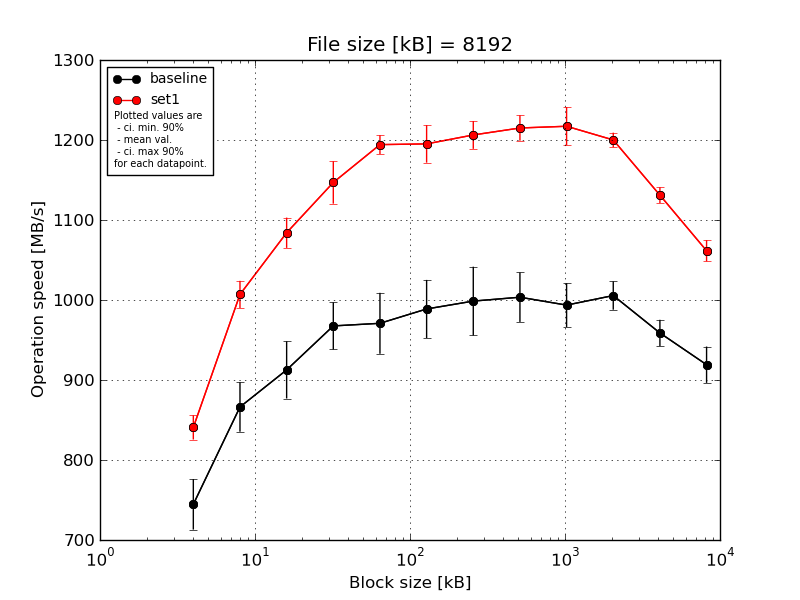
|
File size [kB] |
Block size [kB] |
| 4 |
8 |
16 |
32 |
64 |
128 |
256 |
512 |
1024 |
2048 |
4096 |
8192 |
| baseline | 8192 | 802.17 | 920.59 | 970.07 | 1013.18 | 1018.57 | 1042.62 | 1061.99 | 1038.68 | 1042.59 | 1037.88 | 980.87 | 947.87 |
| 8192 | 728.46 | 852.25 | 885.74 | 966.29 | 935.89 | 953.17 | 996.99 | 1025.88 | 986.06 | 999.39 | 960.38 | 934.46 |
| 8192 | 721.49 | 871.37 | 928.38 | 974.66 | 1001.63 | 1013.7 | 1007.04 | 1009.1 | 966.63 | 996.75 | 950.34 | 913.25 |
| 8192 | 742.87 | 842.63 | 877.68 | 955.45 | 971.47 | 973.95 | 935.45 | 986.58 | 987.66 | 1002.77 | 967.24 | 885.07 |
| 8192 | 727.99 | 844.5 | 901.21 | 928.38 | 926.79 | 960.49 | 991.68 | 957.17 | 985.1 | 991.07 | 935.11 | 914.92 |
| mean val. |
744.6 |
866.27 |
912.62 |
967.6 |
970.87 |
988.79 |
998.63 |
1003.48 |
993.61 |
1005.57 |
958.79 |
919.11 |
| standard dev. |
33.12 |
32.43 |
37.49 |
30.88 |
39.96 |
38.11 |
45.08 |
32.41 |
28.69 |
18.56 |
17.27 |
23.84 |
| ci. min. 90% |
713.02 |
835.35 |
876.87 |
938.15 |
932.77 |
952.46 |
955.65 |
972.58 |
966.26 |
987.88 |
942.32 |
896.38 |
| ci. max 90% |
776.17 |
897.18 |
948.36 |
997.04 |
1008.97 |
1025.12 |
1041.61 |
1034.39 |
1020.96 |
1023.27 |
975.26 |
941.84 |
| geom. mean |
744.03 |
865.79 |
912.01 |
967.2 |
970.21 |
988.21 |
997.82 |
1003.06 |
993.28 |
1005.44 |
958.66 |
918.86 |
| median |
728.46 |
852.25 |
901.21 |
966.29 |
971.47 |
973.95 |
996.99 |
1009.1 |
986.06 |
999.39 |
960.38 |
914.92 |
| first quartile |
727.99 |
844.5 |
885.74 |
955.45 |
935.89 |
960.49 |
991.68 |
986.58 |
985.1 |
996.75 |
950.34 |
913.25 |
| third quartile |
742.87 |
871.37 |
928.38 |
974.66 |
1001.63 |
1013.7 |
1007.04 |
1025.88 |
987.66 |
1002.77 |
967.24 |
934.46 |
| minimum |
721.49 |
842.63 |
877.68 |
928.38 |
926.79 |
953.17 |
935.45 |
957.17 |
966.63 |
991.07 |
935.11 |
885.07 |
| maximum |
802.17 |
920.59 |
970.07 |
1013.18 |
1018.57 |
1042.62 |
1061.99 |
1038.68 |
1042.59 |
1037.88 |
980.87 |
947.87 |
| set1 | 8192 | 859.21 | 1031.05 | 1113.29 | 1172.13 | 1193.86 | 1229.65 | 1226.77 | 1218.4 | 1216.72 | 1212.67 | 1136.98 | 1073.68 |
| 8192 | 853.33 | 985.33 | 1066.95 | 1101.92 | 1185.55 | 1188.49 | 1192.76 | 1230.55 | 1226.05 | 1188.7 | 1115.44 | 1057.24 |
| 8192 | 839.62 | 1004.39 | 1068.35 | 1139.76 | 1178.93 | 1184.3 | 1197.05 | 1229.78 | 1174.55 | 1194.03 | 1135.87 | 1057.37 |
| 8192 | 820.42 | 996.66 | 1076.43 | 1163.31 | 1208.65 | 1165.13 | 1189.59 | 1191.91 | 1238.96 | 1206.09 | 1141.2 | 1076.85 |
| 8192 | 831.07 | 1017.42 | 1095.3 | 1157.42 | 1204.1 | 1208.09 | 1225.29 | 1204.45 | 1229.6 | 1198.85 | 1125.81 | 1042.75 |
| mean val. |
840.73 |
1006.97 |
1084.07 |
1146.91 |
1194.22 |
1195.13 |
1206.29 |
1215.02 |
1217.18 |
1200.07 |
1131.06 |
1061.58 |
| standard dev. |
15.87 |
17.82 |
19.87 |
27.8 |
12.4 |
24.6 |
18.22 |
16.71 |
25.12 |
9.52 |
10.4 |
13.88 |
| ci. min. 90% |
825.6 |
989.98 |
1065.13 |
1120.41 |
1182.4 |
1171.68 |
1188.92 |
1199.09 |
1193.23 |
1191.0 |
1121.14 |
1048.34 |
| ci. max 90% |
855.86 |
1023.96 |
1103.01 |
1173.41 |
1206.04 |
1218.58 |
1223.66 |
1230.95 |
1241.13 |
1209.14 |
1140.97 |
1074.81 |
| geom. mean |
840.61 |
1006.85 |
1083.92 |
1146.64 |
1194.17 |
1194.93 |
1206.18 |
1214.93 |
1216.97 |
1200.04 |
1131.02 |
1061.5 |
| median |
839.62 |
1004.39 |
1076.43 |
1157.42 |
1193.86 |
1188.49 |
1197.05 |
1218.4 |
1226.05 |
1198.85 |
1135.87 |
1057.37 |
| first quartile |
831.07 |
996.66 |
1068.35 |
1139.76 |
1185.55 |
1184.3 |
1192.76 |
1204.45 |
1216.72 |
1194.03 |
1125.81 |
1057.24 |
| third quartile |
853.33 |
1017.42 |
1095.3 |
1163.31 |
1204.1 |
1208.09 |
1225.29 |
1229.78 |
1229.6 |
1206.09 |
1136.98 |
1073.68 |
| minimum |
820.42 |
985.33 |
1066.95 |
1101.92 |
1178.93 |
1165.13 |
1189.59 |
1191.91 |
1174.55 |
1188.7 |
1115.44 |
1042.75 |
| maximum |
859.21 |
1031.05 |
1113.29 |
1172.13 |
1208.65 |
1229.65 |
1226.77 |
1230.55 |
1238.96 |
1212.67 |
1141.2 |
1076.85 |
| baseline set1 difference |
12.91 % |
16.24 % |
18.79 % |
18.53 % |
23.0 % |
20.87 % |
20.79 % |
21.08 % |
22.5 % |
19.34 % |
17.97 % |
15.5 % |
| ttest p-value |
0.0004 |
0.0 |
0.0 |
0.0 |
0.0 |
0.0 |
0.0 |
0.0 |
0.0 |
0.0 |
0.0 |
0.0 |
| ttest equality |
DIFF |
DIFF |
DIFF |
DIFF |
DIFF |
DIFF |
DIFF |
DIFF |
DIFF |
DIFF |
DIFF |
DIFF |
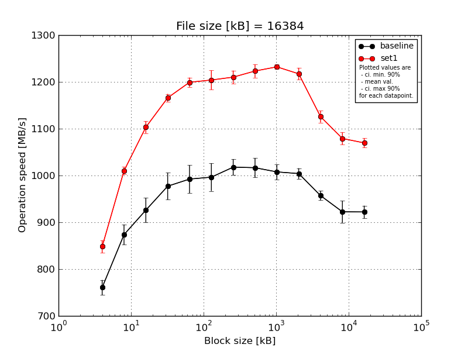
|
File size [kB] |
Block size [kB] |
| 4 |
8 |
16 |
32 |
64 |
128 |
256 |
512 |
1024 |
2048 |
4096 |
8192 |
16384 |
| baseline | 16384 | 790.35 | 903.65 | 971.64 | 1030.61 | 1033.67 | 1031.99 | 1047.4 | 1049.94 | 1032.72 | 1022.12 | 975.25 | 957.51 | 941.01 |
| 16384 | 756.29 | 880.37 | 913.04 | 966.29 | 1003.71 | 1011.0 | 1018.21 | 1009.52 | 1017.62 | 990.35 | 957.8 | 916.48 | 922.35 |
| 16384 | 751.7 | 870.37 | 926.73 | 971.16 | 999.0 | 1007.49 | 1017.24 | 1021.12 | 998.75 | 1008.88 | 951.13 | 930.22 | 904.46 |
| 16384 | 755.61 | 873.08 | 919.6 | 958.77 | 974.25 | 980.28 | 1002.57 | 1012.08 | 994.03 | 999.12 | 950.34 | 917.74 | 929.1 |
| 16384 | 749.8 | 840.68 | 899.13 | 958.95 | 951.02 | 951.59 | 1003.83 | 990.47 | 995.33 | 1000.19 | 950.92 | 890.37 | 913.45 |
| mean val. |
760.75 |
873.63 |
926.03 |
977.16 |
992.33 |
996.47 |
1017.85 |
1016.63 |
1007.69 |
1004.13 |
957.09 |
922.46 |
922.07 |
| standard dev. |
16.77 |
22.6 |
27.45 |
30.33 |
31.29 |
31.11 |
18.05 |
21.71 |
16.91 |
12.01 |
10.6 |
24.37 |
14.08 |
| ci. min. 90% |
744.76 |
852.08 |
899.85 |
948.23 |
962.5 |
966.81 |
1000.64 |
995.93 |
991.56 |
992.69 |
946.98 |
899.23 |
908.65 |
| ci. max 90% |
776.74 |
895.18 |
952.2 |
1006.08 |
1022.16 |
1026.13 |
1035.06 |
1037.33 |
1023.81 |
1015.58 |
967.19 |
945.7 |
935.49 |
| geom. mean |
760.6 |
873.4 |
925.71 |
976.79 |
991.94 |
996.08 |
1017.72 |
1016.44 |
1007.58 |
1004.08 |
957.04 |
922.21 |
921.99 |
| median |
755.61 |
873.08 |
919.6 |
966.29 |
999.0 |
1007.49 |
1017.24 |
1012.08 |
998.75 |
1000.19 |
951.13 |
917.74 |
922.35 |
| first quartile |
751.7 |
870.37 |
913.04 |
958.95 |
974.25 |
980.28 |
1003.83 |
1009.52 |
995.33 |
999.12 |
950.92 |
916.48 |
913.45 |
| third quartile |
756.29 |
880.37 |
926.73 |
971.16 |
1003.71 |
1011.0 |
1018.21 |
1021.12 |
1017.62 |
1008.88 |
957.8 |
930.22 |
929.1 |
| minimum |
749.8 |
840.68 |
899.13 |
958.77 |
951.02 |
951.59 |
1002.57 |
990.47 |
994.03 |
990.35 |
950.34 |
890.37 |
904.46 |
| maximum |
790.35 |
903.65 |
971.64 |
1030.61 |
1033.67 |
1031.99 |
1047.4 |
1049.94 |
1032.72 |
1022.12 |
975.25 |
957.51 |
941.01 |
| set1 | 16384 | 853.57 | 1020.34 | 1123.84 | 1166.61 | 1203.28 | 1173.79 | 1210.46 | 1230.12 | 1233.03 | 1234.37 | 1117.55 | 1079.69 | 1065.04 |
| 16384 | 826.78 | 1003.45 | 1103.99 | 1172.58 | 1181.41 | 1198.23 | 1201.92 | 1206.63 | 1227.26 | 1209.11 | 1125.33 | 1068.17 | 1060.02 |
| 16384 | 864.07 | 1010.88 | 1093.11 | 1174.84 | 1204.72 | 1199.66 | 1233.03 | 1230.57 | 1228.2 | 1228.77 | 1140.17 | 1088.58 | 1085.85 |
| 16384 | 843.62 | 1015.86 | 1089.47 | 1152.66 | 1198.33 | 1219.15 | 1193.77 | 1240.39 | 1232.38 | 1210.85 | 1108.42 | 1063.33 | 1063.26 |
| 16384 | 852.65 | 999.76 | 1105.8 | 1163.21 | 1208.28 | 1229.44 | 1211.77 | 1208.56 | 1240.0 | 1203.36 | 1137.02 | 1095.82 | 1074.11 |
| mean val. |
848.14 |
1010.06 |
1103.24 |
1165.98 |
1199.21 |
1204.05 |
1210.19 |
1223.25 |
1232.18 |
1217.29 |
1125.7 |
1079.12 |
1069.66 |
| standard dev. |
13.97 |
8.51 |
13.45 |
8.77 |
10.57 |
21.46 |
14.68 |
14.89 |
5.05 |
13.47 |
13.25 |
13.58 |
10.45 |
| ci. min. 90% |
834.82 |
1001.94 |
1090.42 |
1157.62 |
1189.13 |
1183.6 |
1196.19 |
1209.06 |
1227.36 |
1204.45 |
1113.06 |
1066.17 |
1059.69 |
| ci. max 90% |
861.45 |
1018.18 |
1116.07 |
1174.34 |
1209.28 |
1224.51 |
1224.19 |
1237.45 |
1236.99 |
1230.13 |
1138.33 |
1092.07 |
1079.62 |
| geom. mean |
848.05 |
1010.03 |
1103.18 |
1165.95 |
1199.17 |
1203.9 |
1210.12 |
1223.18 |
1232.17 |
1217.23 |
1125.63 |
1079.05 |
1069.62 |
| median |
852.65 |
1010.88 |
1103.99 |
1166.61 |
1203.28 |
1199.66 |
1210.46 |
1230.12 |
1232.38 |
1210.85 |
1125.33 |
1079.69 |
1065.04 |
| first quartile |
843.62 |
1003.45 |
1093.11 |
1163.21 |
1198.33 |
1198.23 |
1201.92 |
1208.56 |
1228.2 |
1209.11 |
1117.55 |
1068.17 |
1063.26 |
| third quartile |
853.57 |
1015.86 |
1105.8 |
1172.58 |
1204.72 |
1219.15 |
1211.77 |
1230.57 |
1233.03 |
1228.77 |
1137.02 |
1088.58 |
1074.11 |
| minimum |
826.78 |
999.76 |
1089.47 |
1152.66 |
1181.41 |
1173.79 |
1193.77 |
1206.63 |
1227.26 |
1203.36 |
1108.42 |
1063.33 |
1060.02 |
| maximum |
864.07 |
1020.34 |
1123.84 |
1174.84 |
1208.28 |
1229.44 |
1233.03 |
1240.39 |
1240.0 |
1234.37 |
1140.17 |
1095.82 |
1085.85 |
| baseline set1 difference |
11.49 % |
15.62 % |
19.14 % |
19.32 % |
20.85 % |
20.83 % |
18.9 % |
20.32 % |
22.28 % |
21.23 % |
17.62 % |
16.98 % |
16.01 % |
| ttest p-value |
0.0 |
0.0 |
0.0 |
0.0 |
0.0 |
0.0 |
0.0 |
0.0 |
0.0 |
0.0 |
0.0 |
0.0 |
0.0 |
| ttest equality |
DIFF |
DIFF |
DIFF |
DIFF |
DIFF |
DIFF |
DIFF |
DIFF |
DIFF |
DIFF |
DIFF |
DIFF |
DIFF |
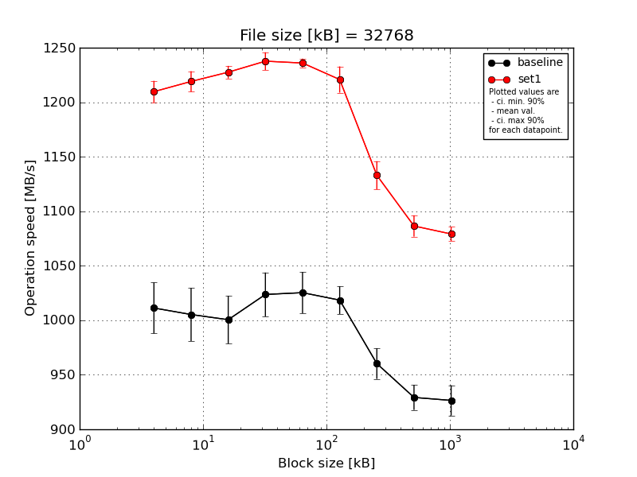
|
File size [kB] |
Block size [kB] |
| 64 |
128 |
256 |
512 |
1024 |
2048 |
4096 |
8192 |
16384 |
| baseline | 32768 | 1047.74 | 1047.94 | 1038.05 | 1058.79 | 1055.37 | 1036.03 | 985.77 | 948.99 | 950.06 |
| 32768 | 1016.01 | 1006.54 | 997.63 | 1022.75 | 1033.03 | 1025.02 | 958.12 | 932.05 | 918.12 |
| 32768 | 1015.64 | 983.32 | 991.47 | 1002.76 | 1013.52 | 1011.22 | 956.14 | 919.38 | 925.98 |
| 32768 | 987.99 | 999.94 | 999.9 | 1013.81 | 1003.89 | 1019.2 | 948.15 | 924.67 | 911.5 |
| 32768 | 989.0 | 988.69 | 975.58 | 1020.28 | 1020.86 | 1000.94 | 953.09 | 921.16 | 926.86 |
| mean val. |
1011.28 |
1005.28 |
1000.53 |
1023.68 |
1025.33 |
1018.48 |
960.25 |
929.25 |
926.5 |
| standard dev. |
24.55 |
25.53 |
23.03 |
21.1 |
19.88 |
13.34 |
14.75 |
12.06 |
14.58 |
| ci. min. 90% |
987.87 |
980.94 |
978.57 |
1003.57 |
1006.38 |
1005.76 |
946.19 |
917.75 |
912.6 |
| ci. max 90% |
1034.68 |
1029.63 |
1022.48 |
1043.79 |
1044.29 |
1031.2 |
974.31 |
940.74 |
940.41 |
| geom. mean |
1011.04 |
1005.03 |
1000.32 |
1023.51 |
1025.18 |
1018.41 |
960.16 |
929.19 |
926.41 |
| median |
1015.64 |
999.94 |
997.63 |
1020.28 |
1020.86 |
1019.2 |
956.14 |
924.67 |
925.98 |
| first quartile |
989.0 |
988.69 |
991.47 |
1013.81 |
1013.52 |
1011.22 |
953.09 |
921.16 |
918.12 |
| third quartile |
1016.01 |
1006.54 |
999.9 |
1022.75 |
1033.03 |
1025.02 |
958.12 |
932.05 |
926.86 |
| minimum |
987.99 |
983.32 |
975.58 |
1002.76 |
1003.89 |
1000.94 |
948.15 |
919.38 |
911.5 |
| maximum |
1047.74 |
1047.94 |
1038.05 |
1058.79 |
1055.37 |
1036.03 |
985.77 |
948.99 |
950.06 |
| set1 | 32768 | 1224.78 | 1234.33 | 1237.57 | 1245.09 | 1242.29 | 1234.19 | 1127.28 | 1077.19 | 1082.8 |
| 32768 | 1203.74 | 1213.96 | 1221.65 | 1241.95 | 1230.49 | 1224.4 | 1115.68 | 1083.94 | 1068.88 |
| 32768 | 1206.55 | 1213.54 | 1224.22 | 1242.33 | 1235.01 | 1229.44 | 1152.28 | 1103.67 | 1083.97 |
| 32768 | 1215.11 | 1209.97 | 1226.85 | 1223.95 | 1235.33 | 1203.33 | 1138.07 | 1081.04 | 1084.6 |
| 32768 | 1198.28 | 1223.43 | 1227.42 | 1234.9 | 1236.67 | 1212.76 | 1131.58 | 1086.62 | 1075.48 |
| mean val. |
1209.69 |
1219.05 |
1227.54 |
1237.64 |
1235.96 |
1220.82 |
1132.98 |
1086.49 |
1079.15 |
| standard dev. |
10.4 |
9.89 |
6.06 |
8.53 |
4.24 |
12.62 |
13.53 |
10.22 |
6.8 |
| ci. min. 90% |
1199.78 |
1209.61 |
1221.77 |
1229.51 |
1231.92 |
1208.8 |
1120.08 |
1076.75 |
1072.66 |
| ci. max 90% |
1219.61 |
1228.48 |
1233.32 |
1245.78 |
1240.0 |
1232.85 |
1145.88 |
1096.24 |
1085.63 |
| geom. mean |
1209.66 |
1219.02 |
1227.53 |
1237.62 |
1235.95 |
1220.77 |
1132.91 |
1086.45 |
1079.13 |
| median |
1206.55 |
1213.96 |
1226.85 |
1241.95 |
1235.33 |
1224.4 |
1131.58 |
1083.94 |
1082.8 |
| first quartile |
1203.74 |
1213.54 |
1224.22 |
1234.9 |
1235.01 |
1212.76 |
1127.28 |
1081.04 |
1075.48 |
| third quartile |
1215.11 |
1223.43 |
1227.42 |
1242.33 |
1236.67 |
1229.44 |
1138.07 |
1086.62 |
1083.97 |
| minimum |
1198.28 |
1209.97 |
1221.65 |
1223.95 |
1230.49 |
1203.33 |
1115.68 |
1077.19 |
1068.88 |
| maximum |
1224.78 |
1234.33 |
1237.57 |
1245.09 |
1242.29 |
1234.19 |
1152.28 |
1103.67 |
1084.6 |
| baseline set1 difference |
19.62 % |
21.26 % |
22.69 % |
20.9 % |
20.54 % |
19.87 % |
17.99 % |
16.92 % |
16.48 % |
| ttest p-value |
0.0 |
0.0 |
0.0 |
0.0 |
0.0 |
0.0 |
0.0 |
0.0 |
0.0 |
| ttest equality |
DIFF |
DIFF |
DIFF |
DIFF |
DIFF |
DIFF |
DIFF |
DIFF |
DIFF |
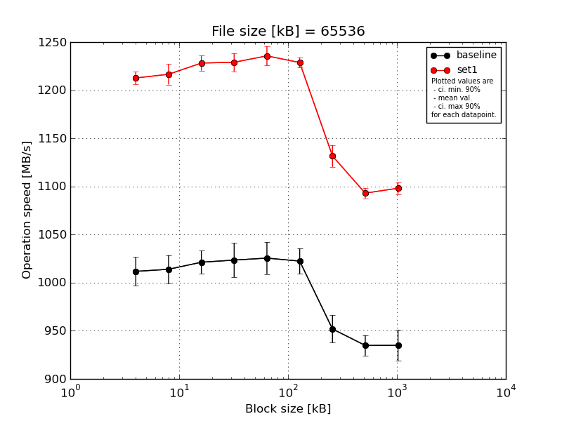
|
File size [kB] |
Block size [kB] |
| 64 |
128 |
256 |
512 |
1024 |
2048 |
4096 |
8192 |
16384 |
| baseline | 65536 | 1037.06 | 1035.56 | 1040.09 | 1052.39 | 1054.09 | 1046.95 | 976.26 | 949.83 | 959.97 |
| 65536 | 1014.09 | 1021.81 | 1025.94 | 1023.64 | 1010.85 | 1018.83 | 944.4 | 935.99 | 943.38 |
| 65536 | 1002.13 | 998.7 | 1006.87 | 1001.55 | 1025.53 | 1016.74 | 939.26 | 939.95 | 919.7 |
| 65536 | 1008.54 | 1013.47 | 1014.34 | 1014.7 | 1012.22 | 1016.47 | 955.65 | 926.88 | 930.19 |
| 65536 | 996.92 | 1000.03 | 1018.93 | 1025.15 | 1024.97 | 1013.09 | 943.87 | 921.29 | 920.9 |
| mean val. |
1011.75 |
1013.92 |
1021.23 |
1023.48 |
1025.53 |
1022.42 |
951.89 |
934.79 |
934.83 |
| standard dev. |
15.56 |
15.45 |
12.62 |
18.69 |
17.38 |
13.87 |
14.9 |
11.17 |
16.95 |
| ci. min. 90% |
996.91 |
999.18 |
1009.21 |
1005.67 |
1008.96 |
1009.2 |
937.68 |
924.13 |
918.67 |
| ci. max 90% |
1026.58 |
1028.65 |
1033.26 |
1041.3 |
1042.1 |
1035.64 |
966.09 |
945.44 |
950.99 |
| geom. mean |
1011.65 |
1013.82 |
1021.17 |
1023.35 |
1025.41 |
1022.34 |
951.79 |
934.73 |
934.71 |
| median |
1008.54 |
1013.47 |
1018.93 |
1023.64 |
1024.97 |
1016.74 |
944.4 |
935.99 |
930.19 |
| first quartile |
1002.13 |
1000.03 |
1014.34 |
1014.7 |
1012.22 |
1016.47 |
943.87 |
926.88 |
920.9 |
| third quartile |
1014.09 |
1021.81 |
1025.94 |
1025.15 |
1025.53 |
1018.83 |
955.65 |
939.95 |
943.38 |
| minimum |
996.92 |
998.7 |
1006.87 |
1001.55 |
1010.85 |
1013.09 |
939.26 |
921.29 |
919.7 |
| maximum |
1037.06 |
1035.56 |
1040.09 |
1052.39 |
1054.09 |
1046.95 |
976.26 |
949.83 |
959.97 |
| set1 | 65536 | 1217.05 | 1228.85 | 1216.34 | 1244.68 | 1233.95 | 1236.17 | 1135.84 | 1098.67 | 1101.49 |
| 65536 | 1217.58 | 1216.75 | 1233.67 | 1218.4 | 1233.99 | 1221.54 | 1134.01 | 1094.22 | 1091.81 |
| 65536 | 1209.65 | 1198.73 | 1230.67 | 1230.61 | 1235.61 | 1227.37 | 1116.23 | 1096.92 | 1107.65 |
| 65536 | 1201.72 | 1216.03 | 1236.88 | 1228.93 | 1252.2 | 1226.88 | 1147.55 | 1084.69 | 1096.17 |
| 65536 | 1217.52 | 1222.45 | 1223.62 | 1222.56 | 1222.75 | 1231.86 | 1124.58 | 1090.72 | 1093.61 |
| mean val. |
1212.7 |
1216.56 |
1228.23 |
1229.03 |
1235.7 |
1228.76 |
1131.64 |
1093.04 |
1098.15 |
| standard dev. |
7.0 |
11.23 |
8.26 |
10.03 |
10.56 |
5.53 |
11.87 |
5.55 |
6.44 |
| ci. min. 90% |
1206.03 |
1205.86 |
1220.36 |
1219.47 |
1225.63 |
1223.49 |
1120.32 |
1087.75 |
1092.0 |
| ci. max 90% |
1219.38 |
1227.27 |
1236.11 |
1238.59 |
1245.77 |
1234.03 |
1142.96 |
1098.34 |
1104.29 |
| geom. mean |
1212.69 |
1216.52 |
1228.21 |
1229.0 |
1235.66 |
1228.75 |
1131.59 |
1093.03 |
1098.13 |
| median |
1217.05 |
1216.75 |
1230.67 |
1228.93 |
1233.99 |
1227.37 |
1134.01 |
1094.22 |
1096.17 |
| first quartile |
1209.65 |
1216.03 |
1223.62 |
1222.56 |
1233.95 |
1226.88 |
1124.58 |
1090.72 |
1093.61 |
| third quartile |
1217.52 |
1222.45 |
1233.67 |
1230.61 |
1235.61 |
1231.86 |
1135.84 |
1096.92 |
1101.49 |
| minimum |
1201.72 |
1198.73 |
1216.34 |
1218.4 |
1222.75 |
1221.54 |
1116.23 |
1084.69 |
1091.81 |
| maximum |
1217.58 |
1228.85 |
1236.88 |
1244.68 |
1252.2 |
1236.17 |
1147.55 |
1098.67 |
1107.65 |
| baseline set1 difference |
19.86 % |
19.99 % |
20.27 % |
20.08 % |
20.49 % |
20.18 % |
18.88 % |
16.93 % |
17.47 % |
| ttest p-value |
0.0 |
0.0 |
0.0 |
0.0 |
0.0 |
0.0 |
0.0 |
0.0 |
0.0 |
| ttest equality |
DIFF |
DIFF |
DIFF |
DIFF |
DIFF |
DIFF |
DIFF |
DIFF |
DIFF |
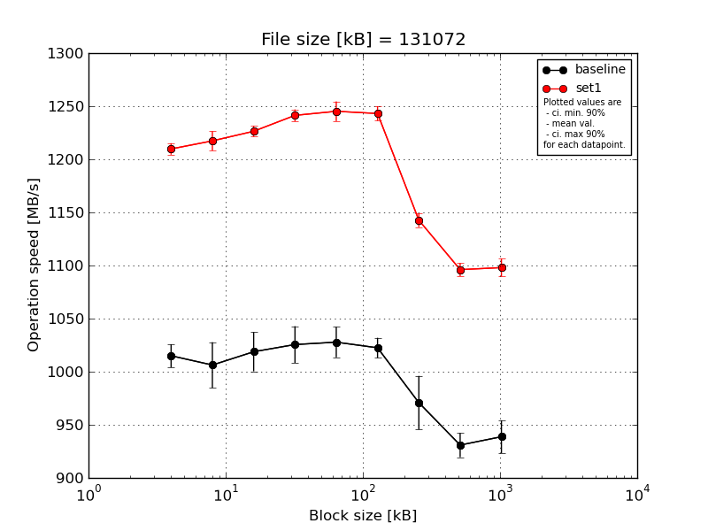
|
File size [kB] |
Block size [kB] |
| 64 |
128 |
256 |
512 |
1024 |
2048 |
4096 |
8192 |
16384 |
| baseline | 131072 | 1030.4 | 1040.5 | 1048.03 | 1055.67 | 1046.77 | 1040.13 | 977.74 | 949.42 | 954.28 |
| 131072 | 1021.08 | 1012.27 | 1028.34 | 1016.43 | 1035.42 | 1016.81 | 962.41 | 923.91 | 936.4 |
| 131072 | 1012.41 | 994.04 | 1009.12 | 1015.91 | 1017.58 | 1018.12 | 947.78 | 936.54 | 955.12 |
| 131072 | 1000.01 | 1004.31 | 1000.41 | 1029.09 | 1030.84 | 1017.63 | 1013.53 | 920.88 | 916.96 |
| 131072 | 1011.26 | 980.29 | 1008.05 | 1010.82 | 1008.52 | 1019.84 | 952.69 | 923.83 | 931.13 |
| mean val. |
1015.03 |
1006.28 |
1018.79 |
1025.58 |
1027.82 |
1022.51 |
970.83 |
930.92 |
938.78 |
| standard dev. |
11.4 |
22.56 |
19.32 |
18.12 |
15.03 |
9.92 |
26.47 |
11.98 |
16.18 |
| ci. min. 90% |
1004.17 |
984.77 |
1000.38 |
1008.31 |
1013.5 |
1013.05 |
945.59 |
919.5 |
923.35 |
| ci. max 90% |
1025.9 |
1027.79 |
1037.21 |
1042.86 |
1042.15 |
1031.96 |
996.07 |
942.34 |
954.2 |
| geom. mean |
1014.98 |
1006.08 |
1018.65 |
1025.46 |
1027.74 |
1022.47 |
970.54 |
930.86 |
938.66 |
| median |
1012.41 |
1004.31 |
1009.12 |
1016.43 |
1030.84 |
1018.12 |
962.41 |
923.91 |
936.4 |
| first quartile |
1011.26 |
994.04 |
1008.05 |
1015.91 |
1017.58 |
1017.63 |
952.69 |
923.83 |
931.13 |
| third quartile |
1021.08 |
1012.27 |
1028.34 |
1029.09 |
1035.42 |
1019.84 |
977.74 |
936.54 |
954.28 |
| minimum |
1000.01 |
980.29 |
1000.41 |
1010.82 |
1008.52 |
1016.81 |
947.78 |
920.88 |
916.96 |
| maximum |
1030.4 |
1040.5 |
1048.03 |
1055.67 |
1046.77 |
1040.13 |
1013.53 |
949.42 |
955.12 |
| set1 | 131072 | 1204.98 | 1222.81 | 1226.53 | 1250.1 | 1259.3 | 1249.18 | 1144.15 | 1100.34 | 1107.7 |
| 131072 | 1209.63 | 1206.53 | 1223.35 | 1235.81 | 1241.31 | 1231.58 | 1134.94 | 1084.92 | 1086.96 |
| 131072 | 1203.91 | 1224.95 | 1234.38 | 1243.88 | 1245.48 | 1249.12 | 1152.18 | 1100.21 | 1106.41 |
| 131072 | 1217.7 | 1225.03 | 1227.57 | 1236.65 | 1247.42 | 1243.1 | 1144.36 | 1096.42 | 1094.92 |
| 131072 | 1212.57 | 1207.44 | 1220.2 | 1240.43 | 1232.57 | 1242.75 | 1137.57 | 1098.79 | 1094.19 |
| mean val. |
1209.76 |
1217.35 |
1226.41 |
1241.37 |
1245.21 |
1243.15 |
1142.64 |
1096.13 |
1098.03 |
| standard dev. |
5.66 |
9.51 |
5.31 |
5.84 |
9.73 |
7.18 |
6.73 |
6.46 |
8.82 |
| ci. min. 90% |
1204.37 |
1208.29 |
1221.34 |
1235.8 |
1235.94 |
1236.3 |
1136.22 |
1089.97 |
1089.63 |
| ci. max 90% |
1215.15 |
1226.42 |
1231.47 |
1246.94 |
1254.49 |
1249.99 |
1149.05 |
1102.3 |
1106.44 |
| geom. mean |
1209.75 |
1217.32 |
1226.4 |
1241.36 |
1245.18 |
1243.13 |
1142.62 |
1096.12 |
1098.01 |
| median |
1209.63 |
1222.81 |
1226.53 |
1240.43 |
1245.48 |
1243.1 |
1144.15 |
1098.79 |
1094.92 |
| first quartile |
1204.98 |
1207.44 |
1223.35 |
1236.65 |
1241.31 |
1242.75 |
1137.57 |
1096.42 |
1094.19 |
| third quartile |
1212.57 |
1224.95 |
1227.57 |
1243.88 |
1247.42 |
1249.12 |
1144.36 |
1100.21 |
1106.41 |
| minimum |
1203.91 |
1206.53 |
1220.2 |
1235.81 |
1232.57 |
1231.58 |
1134.94 |
1084.92 |
1086.96 |
| maximum |
1217.7 |
1225.03 |
1234.38 |
1250.1 |
1259.3 |
1249.18 |
1152.18 |
1100.34 |
1107.7 |
| baseline set1 difference |
19.18 % |
20.98 % |
20.38 % |
21.04 % |
21.15 % |
21.58 % |
17.7 % |
17.75 % |
16.96 % |
| ttest p-value |
0.0 |
0.0 |
0.0 |
0.0 |
0.0 |
0.0 |
0.0 |
0.0 |
0.0 |
| ttest equality |
DIFF |
DIFF |
DIFF |
DIFF |
DIFF |
DIFF |
DIFF |
DIFF |
DIFF |
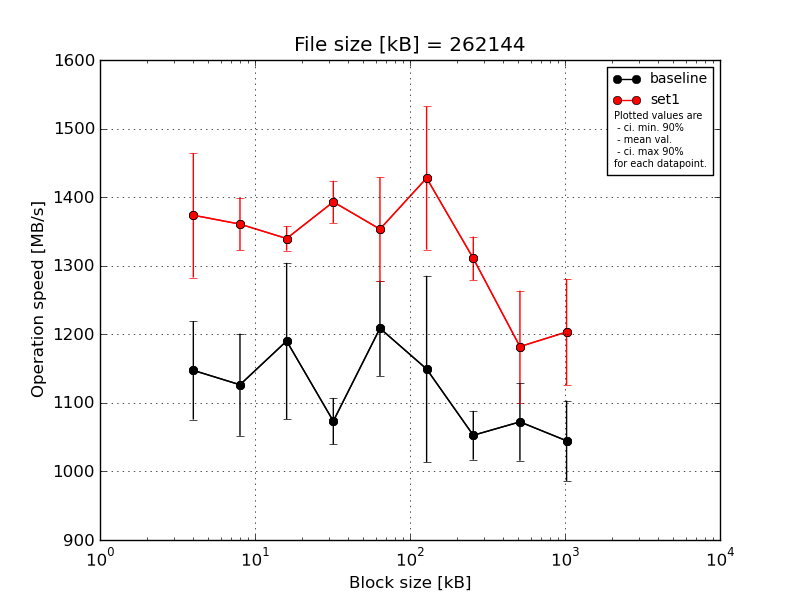
|
File size [kB] |
Block size [kB] |
| 64 |
128 |
256 |
512 |
1024 |
2048 |
4096 |
8192 |
16384 |
| baseline | 262144 | 1147.93 | 1071.71 | 1302.35 | 1058.07 | 1247.23 | 1300.42 | 1028.16 | 1075.62 | 984.69 |
| 262144 | 1027.46 | 1028.81 | 1093.25 | 1078.72 | 1246.5 | 1050.97 | 1042.31 | 1140.7 | 1011.22 |
| 262144 | 1230.73 | 1124.8 | 1032.71 | 1130.22 | 1081.81 | 1056.0 | 1023.73 | 1116.48 | 1076.86 |
| 262144 | 1147.68 | 1209.51 | 1250.59 | 1064.77 | 1255.66 | 1029.58 | 1116.01 | 995.1 | 1014.24 |
| 262144 | 1183.23 | 1197.08 | 1272.09 | 1034.81 | 1212.52 | 1309.81 | 1053.4 | 1033.44 | 1136.29 |
| mean val. |
1147.41 |
1126.38 |
1190.2 |
1073.32 |
1208.74 |
1149.36 |
1052.72 |
1072.27 |
1044.66 |
| standard dev. |
75.19 |
78.13 |
119.51 |
35.55 |
72.86 |
142.57 |
37.27 |
59.4 |
61.38 |
| ci. min. 90% |
1075.72 |
1051.89 |
1076.26 |
1039.42 |
1139.28 |
1013.43 |
1017.19 |
1015.64 |
986.14 |
| ci. max 90% |
1219.09 |
1200.87 |
1304.14 |
1107.21 |
1278.21 |
1285.28 |
1088.26 |
1128.9 |
1103.18 |
| geom. mean |
1145.37 |
1124.2 |
1185.25 |
1072.85 |
1206.9 |
1142.46 |
1052.21 |
1070.95 |
1043.25 |
| median |
1147.93 |
1124.8 |
1250.59 |
1064.77 |
1246.5 |
1056.0 |
1042.31 |
1075.62 |
1014.24 |
| first quartile |
1147.68 |
1071.71 |
1093.25 |
1058.07 |
1212.52 |
1050.97 |
1028.16 |
1033.44 |
1011.22 |
| third quartile |
1183.23 |
1197.08 |
1272.09 |
1078.72 |
1247.23 |
1300.42 |
1053.4 |
1116.48 |
1076.86 |
| minimum |
1027.46 |
1028.81 |
1032.71 |
1034.81 |
1081.81 |
1029.58 |
1023.73 |
995.1 |
984.69 |
| maximum |
1230.73 |
1209.51 |
1302.35 |
1130.22 |
1255.66 |
1309.81 |
1116.01 |
1140.7 |
1136.29 |
| set1 | 262144 | 1223.05 | 1354.6 | 1309.34 | 1424.64 | 1454.58 | 1418.08 | 1317.96 | 1143.56 | 1319.54 |
| 262144 | 1421.07 | 1427.11 | 1349.0 | 1402.46 | 1236.63 | 1478.89 | 1302.35 | 1102.84 | 1109.41 |
| 262144 | 1361.61 | 1333.86 | 1337.34 | 1418.05 | 1341.42 | 1447.54 | 1328.34 | 1134.48 | 1246.31 |
| 262144 | 1383.07 | 1361.48 | 1343.87 | 1372.55 | 1386.84 | 1250.7 | 1258.35 | 1211.7 | 1171.39 |
| 262144 | 1479.29 | 1326.31 | 1358.82 | 1347.66 | 1347.32 | 1543.92 | 1346.4 | 1317.65 | 1170.32 |
| mean val. |
1373.62 |
1360.67 |
1339.67 |
1393.07 |
1353.36 |
1427.82 |
1310.68 |
1182.05 |
1203.39 |
| standard dev. |
95.29 |
39.85 |
18.69 |
32.37 |
79.33 |
109.48 |
33.35 |
85.56 |
81.06 |
| ci. min. 90% |
1282.77 |
1322.68 |
1321.86 |
1362.21 |
1277.72 |
1323.45 |
1278.88 |
1100.47 |
1126.11 |
| ci. max 90% |
1464.47 |
1398.66 |
1357.49 |
1423.94 |
1428.99 |
1532.2 |
1342.47 |
1263.62 |
1280.68 |
| geom. mean |
1370.89 |
1360.21 |
1339.57 |
1392.77 |
1351.47 |
1424.32 |
1310.33 |
1179.65 |
1201.24 |
| median |
1383.07 |
1354.6 |
1343.87 |
1402.46 |
1347.32 |
1447.54 |
1317.96 |
1143.56 |
1171.39 |
| first quartile |
1361.61 |
1333.86 |
1337.34 |
1372.55 |
1341.42 |
1418.08 |
1302.35 |
1134.48 |
1170.32 |
| third quartile |
1421.07 |
1361.48 |
1349.0 |
1418.05 |
1386.84 |
1478.89 |
1328.34 |
1211.7 |
1246.31 |
| minimum |
1223.05 |
1326.31 |
1309.34 |
1347.66 |
1236.63 |
1250.7 |
1258.35 |
1102.84 |
1109.41 |
| maximum |
1479.29 |
1427.11 |
1358.82 |
1424.64 |
1454.58 |
1543.92 |
1346.4 |
1317.65 |
1319.54 |
| baseline set1 difference |
19.72 % |
20.8 % |
12.56 % |
29.79 % |
11.96 % |
24.23 % |
24.5 % |
10.24 % |
15.19 % |
| ttest p-value |
0.0031 |
0.0003 |
0.0246 |
0.0 |
0.017 |
0.0085 |
0.0 |
0.0462 |
0.0082 |
| ttest equality |
DIFF |
DIFF |
DIFF |
DIFF |
DIFF |
DIFF |
DIFF |
DIFF |
DIFF |
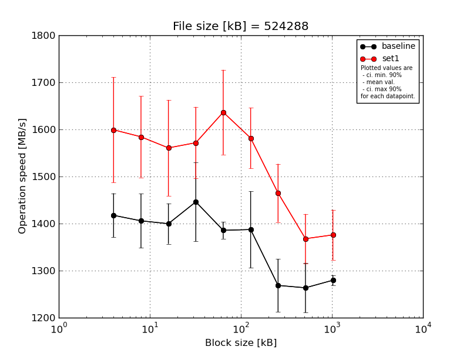
|
File size [kB] |
Block size [kB] |
| 64 |
128 |
256 |
512 |
1024 |
2048 |
4096 |
8192 |
16384 |
| baseline | 524288 | 1487.95 | 1358.27 | 1403.24 | 1368.5 | 1395.92 | 1517.91 | 1372.75 | 1310.98 | 1272.98 |
| 524288 | 1363.05 | 1419.8 | 1441.17 | 1347.45 | 1384.83 | 1331.79 | 1239.16 | 1278.33 | 1265.11 |
| 524288 | 1381.28 | 1416.54 | 1338.48 | 1538.97 | 1411.88 | 1355.47 | 1254.97 | 1173.88 | 1294.99 |
| 524288 | 1436.51 | 1494.04 | 1372.71 | 1448.21 | 1368.79 | 1425.44 | 1246.18 | 1302.45 | 1282.33 |
| 524288 | 1419.07 | 1340.51 | 1443.27 | 1527.48 | 1367.23 | 1305.8 | 1230.09 | 1252.09 | 1282.66 |
| mean val. |
1417.57 |
1405.83 |
1399.77 |
1446.12 |
1385.73 |
1387.28 |
1268.63 |
1263.55 |
1279.61 |
| standard dev. |
49.0 |
60.46 |
45.02 |
88.04 |
18.83 |
85.51 |
58.92 |
55.12 |
11.27 |
| ci. min. 90% |
1370.85 |
1348.19 |
1356.85 |
1362.18 |
1367.78 |
1305.75 |
1212.46 |
1210.99 |
1268.87 |
| ci. max 90% |
1464.29 |
1463.47 |
1442.69 |
1530.06 |
1403.68 |
1468.81 |
1324.8 |
1316.1 |
1290.35 |
| geom. mean |
1416.9 |
1404.8 |
1399.19 |
1443.97 |
1385.63 |
1385.22 |
1267.57 |
1262.56 |
1279.57 |
| median |
1419.07 |
1416.54 |
1403.24 |
1448.21 |
1384.83 |
1355.47 |
1246.18 |
1278.33 |
1282.33 |
| first quartile |
1381.28 |
1358.27 |
1372.71 |
1368.5 |
1368.79 |
1331.79 |
1239.16 |
1252.09 |
1272.98 |
| third quartile |
1436.51 |
1419.8 |
1441.17 |
1527.48 |
1395.92 |
1425.44 |
1254.97 |
1302.45 |
1282.66 |
| minimum |
1363.05 |
1340.51 |
1338.48 |
1347.45 |
1367.23 |
1305.8 |
1230.09 |
1173.88 |
1265.11 |
| maximum |
1487.95 |
1494.04 |
1443.27 |
1538.97 |
1411.88 |
1517.91 |
1372.75 |
1310.98 |
1294.99 |
| set1 | 524288 | 1524.77 | 1646.6 | 1531.16 | 1677.52 | 1674.63 | 1693.37 | 1391.36 | 1318.2 | 1315.2 |
| 524288 | 1518.75 | 1679.48 | 1473.44 | 1509.32 | 1644.73 | 1508.59 | 1444.7 | 1441.54 | 1427.22 |
| 524288 | 1729.95 | 1619.76 | 1724.68 | 1477.44 | 1755.07 | 1566.76 | 1520.13 | 1389.07 | 1315.79 |
| 524288 | 1498.01 | 1485.88 | 1469.46 | 1589.57 | 1611.37 | 1567.33 | 1424.23 | 1308.45 | 1403.04 |
| 524288 | 1724.56 | 1490.09 | 1605.12 | 1605.32 | 1496.99 | 1572.28 | 1544.43 | 1382.17 | 1418.57 |
| mean val. |
1599.21 |
1584.36 |
1560.77 |
1571.83 |
1636.56 |
1581.67 |
1464.97 |
1367.88 |
1375.96 |
| standard dev. |
117.32 |
90.5 |
106.86 |
79.72 |
94.44 |
67.7 |
64.9 |
54.95 |
55.88 |
| ci. min. 90% |
1487.35 |
1498.08 |
1458.89 |
1495.83 |
1546.52 |
1517.12 |
1403.1 |
1315.49 |
1322.69 |
| ci. max 90% |
1711.06 |
1670.64 |
1662.65 |
1647.84 |
1726.6 |
1646.21 |
1526.84 |
1420.27 |
1429.24 |
| geom. mean |
1595.82 |
1582.27 |
1557.92 |
1570.22 |
1634.35 |
1580.53 |
1463.83 |
1367.0 |
1375.05 |
| median |
1524.77 |
1619.76 |
1531.16 |
1589.57 |
1644.73 |
1567.33 |
1444.7 |
1382.17 |
1403.04 |
| first quartile |
1518.75 |
1490.09 |
1473.44 |
1509.32 |
1611.37 |
1566.76 |
1424.23 |
1318.2 |
1315.79 |
| third quartile |
1724.56 |
1646.6 |
1605.12 |
1605.32 |
1674.63 |
1572.28 |
1520.13 |
1389.07 |
1418.57 |
| minimum |
1498.01 |
1485.88 |
1469.46 |
1477.44 |
1496.99 |
1508.59 |
1391.36 |
1308.45 |
1315.2 |
| maximum |
1729.95 |
1679.48 |
1724.68 |
1677.52 |
1755.07 |
1693.37 |
1544.43 |
1441.54 |
1427.22 |
| baseline set1 difference |
12.81 % |
12.7 % |
11.5 % |
8.69 % |
18.1 % |
14.01 % |
15.48 % |
8.26 % |
7.53 % |
| ttest p-value |
0.0127 |
0.0063 |
0.0146 |
0.0455 |
0.0004 |
0.004 |
0.001 |
0.0171 |
0.0054 |
| ttest equality |
DIFF |
DIFF |
DIFF |
DIFF |
DIFF |
DIFF |
DIFF |
DIFF |
DIFF |
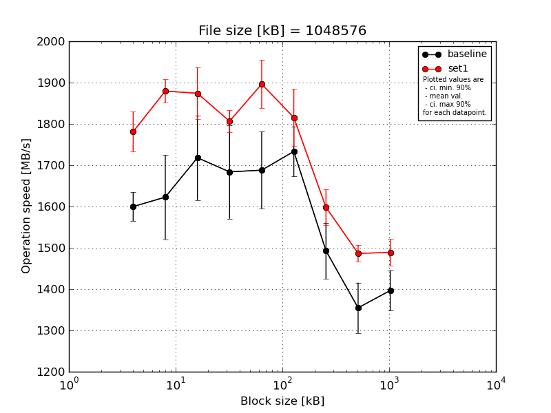
|
File size [kB] |
Block size [kB] |
| 64 |
128 |
256 |
512 |
1024 |
2048 |
4096 |
8192 |
16384 |
| baseline | 1048576 | 1657.86 | 1785.83 | 1800.01 | 1814.9 | 1679.07 | 1799.82 | 1527.06 | 1377.51 | 1461.99 |
| 1048576 | 1585.08 | 1619.35 | 1768.04 | 1565.51 | 1541.14 | 1667.5 | 1537.86 | 1295.57 | 1355.01 |
| 1048576 | 1578.25 | 1544.68 | 1768.11 | 1549.82 | 1666.06 | 1662.4 | 1366.74 | 1443.38 | 1442.62 |
| 1048576 | 1565.78 | 1651.91 | 1532.27 | 1754.57 | 1786.07 | 1769.76 | 1525.88 | 1368.12 | 1365.58 |
| 1048576 | 1612.15 | 1511.69 | 1722.11 | 1734.38 | 1767.66 | 1767.29 | 1506.4 | 1288.72 | 1357.71 |
| mean val. |
1599.82 |
1622.69 |
1718.11 |
1683.84 |
1688.0 |
1733.35 |
1492.79 |
1354.66 |
1396.58 |
| standard dev. |
36.61 |
107.11 |
107.53 |
119.06 |
97.59 |
63.77 |
71.37 |
64.06 |
51.47 |
| ci. min. 90% |
1564.91 |
1520.58 |
1615.58 |
1570.33 |
1594.96 |
1672.56 |
1424.74 |
1293.59 |
1347.51 |
| ci. max 90% |
1634.73 |
1724.8 |
1820.63 |
1797.34 |
1781.04 |
1794.15 |
1560.83 |
1415.74 |
1445.65 |
| geom. mean |
1599.49 |
1619.92 |
1715.28 |
1680.43 |
1685.7 |
1732.41 |
1491.36 |
1353.46 |
1395.83 |
| median |
1585.08 |
1619.35 |
1768.04 |
1734.38 |
1679.07 |
1767.29 |
1525.88 |
1368.12 |
1365.58 |
| first quartile |
1578.25 |
1544.68 |
1722.11 |
1565.51 |
1666.06 |
1667.5 |
1506.4 |
1295.57 |
1357.71 |
| third quartile |
1612.15 |
1651.91 |
1768.11 |
1754.57 |
1767.66 |
1769.76 |
1527.06 |
1377.51 |
1442.62 |
| minimum |
1565.78 |
1511.69 |
1532.27 |
1549.82 |
1541.14 |
1662.4 |
1366.74 |
1288.72 |
1355.01 |
| maximum |
1657.86 |
1785.83 |
1800.01 |
1814.9 |
1786.07 |
1799.82 |
1537.86 |
1443.38 |
1461.99 |
| set1 | 1048576 | 1762.82 | 1883.54 | 1762.37 | 1797.23 | 1974.82 | 1925.34 | 1617.53 | 1471.18 | 1493.61 |
| 1048576 | 1790.03 | 1888.38 | 1924.87 | 1764.46 | 1853.77 | 1796.15 | 1551.63 | 1503.81 | 1465.99 |
| 1048576 | 1744.02 | 1877.8 | 1913.57 | 1835.9 | 1949.78 | 1848.96 | 1648.26 | 1484.29 | 1490.39 |
| 1048576 | 1744.0 | 1833.33 | 1868.64 | 1821.17 | 1860.25 | 1753.54 | 1548.83 | 1511.56 | 1541.99 |
| 1048576 | 1864.74 | 1914.45 | 1901.27 | 1814.16 | 1843.17 | 1753.21 | 1624.04 | 1461.65 | 1451.74 |
| mean val. |
1781.12 |
1879.5 |
1874.14 |
1806.58 |
1896.36 |
1815.44 |
1598.06 |
1486.5 |
1488.74 |
| standard dev. |
50.4 |
29.38 |
65.93 |
27.35 |
61.15 |
72.93 |
45.15 |
21.13 |
34.46 |
| ci. min. 90% |
1733.07 |
1851.49 |
1811.29 |
1780.51 |
1838.06 |
1745.91 |
1555.02 |
1466.36 |
1455.89 |
| ci. max 90% |
1829.18 |
1907.51 |
1937.0 |
1832.66 |
1954.65 |
1884.98 |
1641.1 |
1506.64 |
1521.59 |
| geom. mean |
1780.56 |
1879.32 |
1873.19 |
1806.42 |
1895.57 |
1814.29 |
1597.55 |
1486.38 |
1488.43 |
| median |
1762.82 |
1883.54 |
1901.27 |
1814.16 |
1860.25 |
1796.15 |
1617.53 |
1484.29 |
1490.39 |
| first quartile |
1744.02 |
1877.8 |
1868.64 |
1797.23 |
1853.77 |
1753.54 |
1551.63 |
1471.18 |
1465.99 |
| third quartile |
1790.03 |
1888.38 |
1913.57 |
1821.17 |
1949.78 |
1848.96 |
1624.04 |
1503.81 |
1493.61 |
| minimum |
1744.0 |
1833.33 |
1762.37 |
1764.46 |
1843.17 |
1753.21 |
1548.83 |
1461.65 |
1451.74 |
| maximum |
1864.74 |
1914.45 |
1924.87 |
1835.9 |
1974.82 |
1925.34 |
1648.26 |
1511.56 |
1541.99 |
| baseline set1 difference |
11.33 % |
15.83 % |
9.08 % |
7.29 % |
12.34 % |
4.74 % |
7.05 % |
9.73 % |
6.6 % |
| ttest p-value |
0.0002 |
0.0009 |
0.0244 |
0.0548 |
0.0037 |
0.0948 |
0.0237 |
0.0024 |
0.0104 |
| ttest equality |
DIFF |
DIFF |
DIFF |
DIFF |
DIFF |
DIFF |
DIFF |
DIFF |
DIFF |
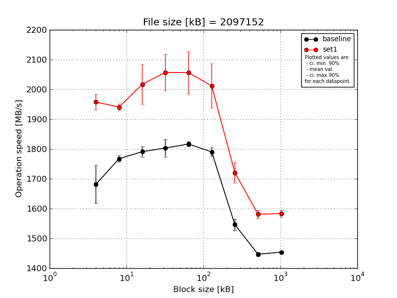
|
File size [kB] |
Block size [kB] |
| 64 |
128 |
256 |
512 |
1024 |
2048 |
4096 |
8192 |
16384 |
| baseline | 2097152 | 1662.45 | 1770.68 | 1811.8 | 1835.59 | 1811.77 | 1810.79 | 1565.66 | 1457.42 | 1449.95 |
| 2097152 | 1644.54 | 1757.94 | 1782.44 | 1791.65 | 1828.72 | 1775.28 | 1545.52 | 1438.83 | 1459.77 |
| 2097152 | 1800.31 | 1773.63 | 1803.64 | 1760.42 | 1806.07 | 1798.01 | 1514.42 | 1450.73 | 1451.06 |
| 2097152 | 1640.6 | 1780.02 | 1791.89 | 1799.07 | 1814.19 | 1776.44 | 1543.22 | 1445.04 | 1457.92 |
| 2097152 | 1661.37 | 1754.49 | 1765.54 | 1829.66 | 1822.97 | 1790.13 | 1561.88 | 1441.68 | 1450.51 |
| mean val. |
1681.86 |
1767.35 |
1791.06 |
1803.28 |
1816.74 |
1790.13 |
1546.14 |
1446.74 |
1453.84 |
| standard dev. |
66.94 |
10.78 |
18.13 |
30.54 |
9.05 |
14.97 |
20.27 |
7.43 |
4.63 |
| ci. min. 90% |
1618.04 |
1757.07 |
1773.78 |
1774.16 |
1808.12 |
1775.86 |
1526.82 |
1439.65 |
1449.43 |
| ci. max 90% |
1745.67 |
1777.63 |
1808.35 |
1832.39 |
1825.37 |
1804.41 |
1565.47 |
1453.82 |
1458.26 |
| geom. mean |
1680.83 |
1767.33 |
1790.99 |
1803.07 |
1816.73 |
1790.08 |
1546.04 |
1446.72 |
1453.84 |
| median |
1661.37 |
1770.68 |
1791.89 |
1799.07 |
1814.19 |
1790.13 |
1545.52 |
1445.04 |
1451.06 |
| first quartile |
1644.54 |
1757.94 |
1782.44 |
1791.65 |
1811.77 |
1776.44 |
1543.22 |
1441.68 |
1450.51 |
| third quartile |
1662.45 |
1773.63 |
1803.64 |
1829.66 |
1822.97 |
1798.01 |
1561.88 |
1450.73 |
1457.92 |
| minimum |
1640.6 |
1754.49 |
1765.54 |
1760.42 |
1806.07 |
1775.28 |
1514.42 |
1438.83 |
1449.95 |
| maximum |
1800.31 |
1780.02 |
1811.8 |
1835.59 |
1828.72 |
1810.79 |
1565.66 |
1457.42 |
1459.77 |
| set1 | 2097152 | 1940.49 | 1929.43 | 2019.28 | 2037.47 | 1952.38 | 1942.67 | 1740.45 | 1575.57 | 1594.65 |
| 2097152 | 1979.65 | 1928.13 | 2082.09 | 2024.85 | 2079.96 | 2107.19 | 1773.13 | 1591.65 | 1566.63 |
| 2097152 | 1923.98 | 1946.83 | 2090.31 | 2037.05 | 2035.28 | 2040.08 | 1689.35 | 1602.1 | 1585.48 |
| 2097152 | 1952.22 | 1946.61 | 1939.06 | 2017.04 | 2054.33 | 2048.49 | 1689.65 | 1568.95 | 1574.33 |
| 2097152 | 1991.2 | 1952.06 | 1955.23 | 2169.82 | 2158.5 | 1921.27 | 1710.56 | 1567.97 | 1595.07 |
| mean val. |
1957.51 |
1940.61 |
2017.19 |
2057.25 |
2056.09 |
2011.94 |
1720.63 |
1581.25 |
1583.23 |
| standard dev. |
27.69 |
11.03 |
69.83 |
63.52 |
74.58 |
77.81 |
36.02 |
15.02 |
12.56 |
| ci. min. 90% |
1931.11 |
1930.1 |
1950.62 |
1996.69 |
1984.99 |
1937.75 |
1686.29 |
1566.92 |
1571.26 |
| ci. max 90% |
1983.91 |
1951.13 |
2083.77 |
2117.8 |
2127.2 |
2086.13 |
1754.97 |
1595.57 |
1595.2 |
| geom. mean |
1957.35 |
1940.59 |
2016.23 |
2056.48 |
2055.01 |
2010.73 |
1720.33 |
1581.19 |
1583.19 |
| median |
1952.22 |
1946.61 |
2019.28 |
2037.05 |
2054.33 |
2040.08 |
1710.56 |
1575.57 |
1585.48 |
| first quartile |
1940.49 |
1929.43 |
1955.23 |
2024.85 |
2035.28 |
1942.67 |
1689.65 |
1568.95 |
1574.33 |
| third quartile |
1979.65 |
1946.83 |
2082.09 |
2037.47 |
2079.96 |
2048.49 |
1740.45 |
1591.65 |
1594.65 |
| minimum |
1923.98 |
1928.13 |
1939.06 |
2017.04 |
1952.38 |
1921.27 |
1689.35 |
1567.97 |
1566.63 |
| maximum |
1991.2 |
1952.06 |
2090.31 |
2169.82 |
2158.5 |
2107.19 |
1773.13 |
1602.1 |
1595.07 |
| baseline set1 difference |
16.39 % |
9.8 % |
12.63 % |
14.08 % |
13.17 % |
12.39 % |
11.29 % |
9.3 % |
8.9 % |
| ttest p-value |
0.0 |
0.0 |
0.0001 |
0.0 |
0.0001 |
0.0002 |
0.0 |
0.0 |
0.0 |
| ttest equality |
DIFF |
DIFF |
DIFF |
DIFF |
DIFF |
DIFF |
DIFF |
DIFF |
DIFF |
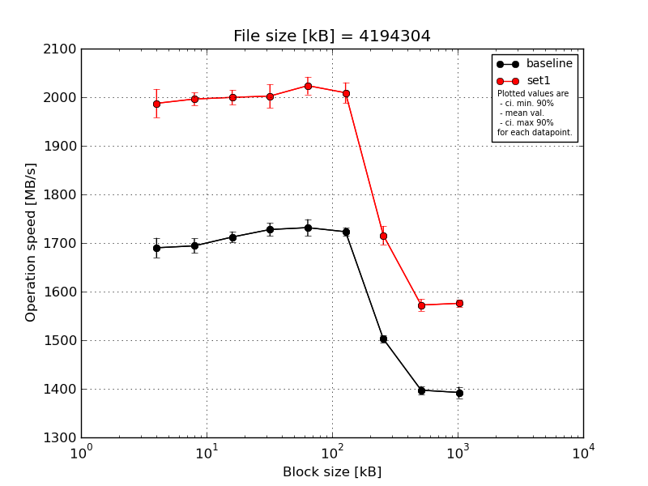
|
File size [kB] |
Block size [kB] |
| 64 |
128 |
256 |
512 |
1024 |
2048 |
4096 |
8192 |
16384 |
| baseline | 4194304 | 1719.39 | 1696.42 | 1706.88 | 1745.58 | 1752.88 | 1728.13 | 1506.26 | 1387.43 | 1405.85 |
| 4194304 | 1698.16 | 1680.29 | 1695.58 | 1732.54 | 1731.22 | 1734.39 | 1508.59 | 1393.93 | 1394.86 |
| 4194304 | 1679.75 | 1705.32 | 1727.87 | 1728.78 | 1734.6 | 1725.56 | 1492.68 | 1407.43 | 1387.49 |
| 4194304 | 1691.64 | 1712.72 | 1715.31 | 1725.29 | 1736.76 | 1716.87 | 1510.01 | 1405.22 | 1400.0 |
| 4194304 | 1661.86 | 1676.19 | 1715.64 | 1706.65 | 1702.87 | 1710.94 | 1495.24 | 1391.93 | 1374.14 |
| mean val. |
1690.16 |
1694.19 |
1712.26 |
1727.77 |
1731.66 |
1723.18 |
1502.56 |
1397.19 |
1392.47 |
| standard dev. |
21.39 |
15.73 |
11.95 |
14.08 |
18.12 |
9.3 |
8.01 |
8.7 |
12.27 |
| ci. min. 90% |
1669.77 |
1679.19 |
1700.86 |
1714.34 |
1714.38 |
1714.32 |
1494.92 |
1388.89 |
1380.77 |
| ci. max 90% |
1710.55 |
1709.18 |
1723.65 |
1741.19 |
1748.94 |
1732.04 |
1510.2 |
1405.48 |
1404.17 |
| geom. mean |
1690.05 |
1694.13 |
1712.22 |
1727.72 |
1731.59 |
1723.16 |
1502.54 |
1397.17 |
1392.42 |
| median |
1691.64 |
1696.42 |
1715.31 |
1728.78 |
1734.6 |
1725.56 |
1506.26 |
1393.93 |
1394.86 |
| first quartile |
1679.75 |
1680.29 |
1706.88 |
1725.29 |
1731.22 |
1716.87 |
1495.24 |
1391.93 |
1387.49 |
| third quartile |
1698.16 |
1705.32 |
1715.64 |
1732.54 |
1736.76 |
1728.13 |
1508.59 |
1405.22 |
1400.0 |
| minimum |
1661.86 |
1676.19 |
1695.58 |
1706.65 |
1702.87 |
1710.94 |
1492.68 |
1387.43 |
1374.14 |
| maximum |
1719.39 |
1712.72 |
1727.87 |
1745.58 |
1752.88 |
1734.39 |
1510.01 |
1407.43 |
1405.85 |
| set1 | 4194304 | 1953.75 | 1991.78 | 1990.38 | 2002.98 | 2042.46 | 2045.61 | 1704.65 | 1556.63 | 1577.6 |
| 4194304 | 2004.71 | 2019.13 | 1981.35 | 1991.47 | 2042.25 | 2009.55 | 1698.86 | 1575.67 | 1583.19 |
| 4194304 | 1982.65 | 1988.54 | 2023.63 | 2046.01 | 2005.78 | 1985.65 | 1713.7 | 1572.52 | 1568.9 |
| 4194304 | 1965.53 | 1984.17 | 1999.14 | 1990.55 | 2025.16 | 2005.21 | 1710.7 | 1566.13 | 1582.62 |
| 4194304 | 2030.52 | 1997.63 | 2003.71 | 1980.65 | 2003.29 | 1999.49 | 1750.57 | 1591.18 | 1567.13 |
| mean val. |
1987.43 |
1996.25 |
1999.64 |
2002.33 |
2023.79 |
2009.1 |
1715.69 |
1572.43 |
1575.89 |
| standard dev. |
30.79 |
13.7 |
15.91 |
25.66 |
18.95 |
22.31 |
20.32 |
12.76 |
7.53 |
| ci. min. 90% |
1958.08 |
1983.19 |
1984.47 |
1977.86 |
2005.72 |
1987.83 |
1696.32 |
1560.26 |
1568.71 |
| ci. max 90% |
2016.79 |
2009.31 |
2014.81 |
2026.8 |
2041.85 |
2030.37 |
1735.06 |
1584.59 |
1583.07 |
| geom. mean |
1987.24 |
1996.21 |
1999.59 |
2002.2 |
2023.72 |
2009.0 |
1715.6 |
1572.39 |
1575.87 |
| median |
1982.65 |
1991.78 |
1999.14 |
1991.47 |
2025.16 |
2005.21 |
1710.7 |
1572.52 |
1577.6 |
| first quartile |
1965.53 |
1988.54 |
1990.38 |
1990.55 |
2005.78 |
1999.49 |
1704.65 |
1566.13 |
1568.9 |
| third quartile |
2004.71 |
1997.63 |
2003.71 |
2002.98 |
2042.25 |
2009.55 |
1713.7 |
1575.67 |
1582.62 |
| minimum |
1953.75 |
1984.17 |
1981.35 |
1980.65 |
2003.29 |
1985.65 |
1698.86 |
1556.63 |
1567.13 |
| maximum |
2030.52 |
2019.13 |
2023.63 |
2046.01 |
2042.46 |
2045.61 |
1750.57 |
1591.18 |
1583.19 |
| baseline set1 difference |
17.59 % |
17.83 % |
16.78 % |
15.89 % |
16.87 % |
16.59 % |
14.19 % |
12.54 % |
13.17 % |
| ttest p-value |
0.0 |
0.0 |
0.0 |
0.0 |
0.0 |
0.0 |
0.0 |
0.0 |
0.0 |
| ttest equality |
DIFF |
DIFF |
DIFF |
DIFF |
DIFF |
DIFF |
DIFF |
DIFF |
DIFF |